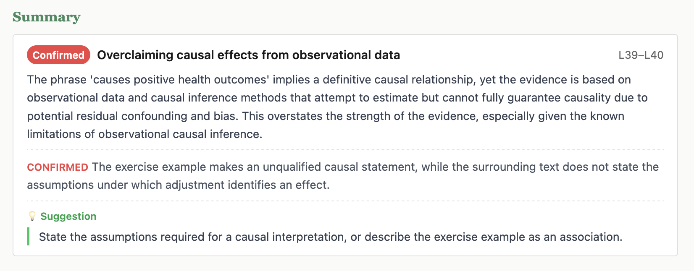
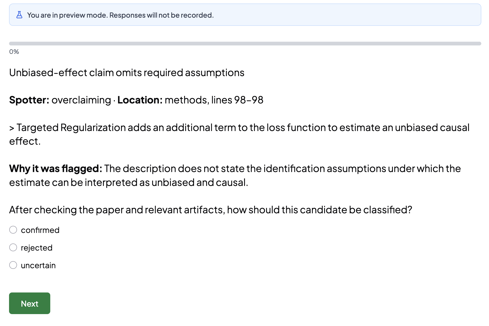

A worked manuscript review with Katz
Katz is primarily an agent-facing tool: its CLI returns structured JSON, its review jobs and results are portable EDSL objects, and its ledger preserves the evidence behind later agent actions. This tutorial walks through a complete manuscript review while explaining what each artifact is for.
The basic workflow
Katz treats review as a staged process in which each artifact becomes the input to the next:
- Put the paper into canonical form. Preserve one reviewable manuscript representation, tie it to a Git commit, and map stable sections and source ranges.
- Use a map-reduce pattern to identify candidate issues. Map selected spotters across manuscript sections—or the whole paper when global context is required—then reduce the returned results into a deduplicated, source-anchored issue ledger.
- Let an agent triage and investigate the ledger. The agent reads surrounding context, rejects false positives, merges duplicates, confirms material findings, and records its reasoning. When human judgment is required, it can route the same issue records through an EDSL Humanize survey and apply the returned decisions.
- Promote confirmed findings into the work system. With human approval, turn appropriate findings into tracker-neutral work-item drafts, preserve their Katz IDs and manuscript evidence, and then send the approved drafts to the team’s chosen tracker.
flowchart TD
A[Canonical manuscript] --> B[Register version]
B --> C[Map spotters across sections]
B --> D[Import existing reviews]
C --> E[Draft issue ledger]
D --> E
E --> F[Investigate and deduplicate]
F -->|confirm| G[Validated findings]
F -->|reject| H[Preserved rejection]
G --> I[Review report]
G --> J[Approved work-item drafts]
J --> K[Team tracker]
Contents
- What Katz does
- Let an agent discover the workflow
- Prepare the workspace
- Prepare PDF or LaTeX input
- Save the exact paper version
- Divide the paper into sections
- Add a finding manually
- Choose what the review should look for
- Run the automated first pass
- Ask a frontier model for one expert review
- Read the proposed findings
- Decide which findings are real
- Ask people to classify findings
- Turn confirmed findings into work items
- Record whole-paper judgments
- Check the review data
- Build the review website
- Track fixes in a revision
- Files created
01 What Katz does and what we will review
Katz stores a manuscript review as structured, repository-scoped data. A registered paper is tied to a Git commit; review instructions are stored as spotters; model findings become source-anchored issues; and the resulting ledger can be validated and rendered as HTML. This tutorial builds each of those artifacts in order so the relationship between them remains visible.
The worked example is Roni W. Kobrosly’s short software paper causal-curve: A Python Causal Inference Package to Estimate Causal Dose-Response Curves, published by the Journal of Open Source Software in 2020. Its Markdown source is public, and its completed public peer review provides useful context when checking model-generated concerns.
This is a workflow demonstration, not a new assessment of the author or published article. We review the source to learn Katz. JOSS’s accepted version and public review remain the authoritative publication record.
Katz manages the review record; EDSL runs the model jobs. Neither replaces judgment. The model proposes candidates, while the reviewer checks the quoted passage, surrounding paper, code, documentation, and public review before deciding what belongs in the report.
Let an agent discover the workflow instead of memorizing it
Codex, Claude Code, or another coding agent begins with Katz’s durable lifecycle guide, then asks the repository state what should happen next. This makes workflow decisions depend on preserved artifacts rather than conversational memory.
katz guide{
"status": "ok",
"command": "katz guide",
"data": {
"lifecycle": [
{
"stage": "register",
"purpose": "Preserve and map a committed canonical manuscript.",
"commands": ["katz init", "katz paper register", "katz paper auto-chunk"]
},
{
"stage": "configure",
"purpose": "Select explicit, versioned review criteria and spotters.",
"commands": ["katz spotter init-catalog", "katz spotter enable"]
},
{
"stage": "package",
"purpose": "Create and verify a native EDSL Jobs artifact.",
"commands": ["katz spotter jobs", "katz paper review-jobs", "katz review jobs"]
},
{
"stage": "external-execution",
"purpose": "Run model work explicitly outside Katz.",
"commands": ["ep run <jobs.ep> --output <results.ep>"],
"requires_user_approval": true
},
{
"stage": "register-and-audit",
"purpose": "Audit Results and register them without hiding retries.",
"commands": ["katz results audit", "katz ingest", "katz spotter ingest"]
},
{
"stage": "investigate-and-report",
"purpose": "Investigate draft findings and generate an evidence-linked report.",
"commands": ["katz issue next", "katz validate", "katz report generate"]
}
],
"execution_boundary": {
"owner": "ep",
"rule": "Katz creates native Jobs and consumes Results; it never executes model calls."
},
"resume": "Run `katz next` after every material stage."
},
"next_steps": [
"Run `katz next` to inspect the repository's current artifact state."
]
}The guide identifies registration, review configuration, Jobs packaging, the explicit external ep run boundary, Results registration and audit, investigation, and reporting.
katz next{
"status": "ok",
"command": "katz next",
"data": {
"schema_version": "1.0",
"phase": "katz_setup",
"ready": false,
"action": {
"id": "katz_init",
"command": ["katz", "init"],
"mutates_state": true,
"requires_network": false,
"requires_user_approval": false
},
"alternatives": [],
"blockers": []
},
"warnings": [],
"errors": [],
"next_steps": []
}After completing an authorized action, run katz next again. Candidate manuscript ranking is advisory; ambiguous registration requires confirmation. Every proposed action declares whether it mutates state, uses the network, or requires approval. katz agent status returns the complete state when one recommendation is not enough context.
JSON remains the default and authoritative interface for agents and shell pipelines. The tutorial therefore shows every Katz command without --human. Where a captured Katz response is available, the two closed disclosures show the same response as a readable human summary and as the original JSON. The human view is for the reader; an agent should run the command as written and consume its JSON response.
The repository’s AGENTS.md owns working rules. The CLI parser owns exact options and defaults. Captured Katz outputs below come from the worked run and are abbreviated: repeated envelope fields may be omitted, while run-specific counts, commits, issue records, and diagnostics are retained.
02 Prepare the workspace and paper
We use the open-source paper causal-curve: A Python Causal Inference Package to Estimate Causal Dose-Response Curves because its manuscript and supporting code already live together in a public Git repository. That makes the example easy to reproduce and lets us inspect both the paper and the implementation when investigating a finding. Katz uses the current Git commit as the manuscript version identifier, so the repository also gives this review an exact starting state.
An existing paper repository is convenient, not required. If all you have is a PDF or a LaTeX project, create or choose a Git workspace, put the source material there, and prepare the canonical Markdown and image bundle as shown in the next section. Inspect and commit that prepared representation before registering it with Katz. From that point onward, the review workflow is the same.
For this worked example, a separate tutorial branch keeps the generated manuscript derivative and review ledger away from the upstream project history.
Clone the paper repository
git clone https://github.com/ronikobrosly/causal-curve.gitClone the source repository so Katz can associate the review with an exact version of the paper.
cd causal-curveRun the remaining commands from this repository root; this is where Katz will create .katz/.
git switch -c katz-tutorialgit switch changes the branch currently checked out in the workspace. The -c katz-tutorial option first creates a new branch named katz-tutorial from the current commit and then switches to it. The files initially remain unchanged; subsequent commits containing the prepared manuscript and Katz review data belong to this tutorial branch rather than the paper’s original branch.
Set up Expected Parrot for AI assistance on the manuscript
Later review stages use AI models to apply spotters, parse existing reviews, and propose candidate findings. EDSL can run that work locally or through Expected Parrot servers. Local execution sends requests from your machine using the model-provider credentials you configure. Server execution adds managed job execution, automatic response caching, saved results, and other hosted features.
If you use Expected Parrot servers, you can add model-provider keys you already have to your Expected Parrot account, or buy Expected Parrot credits instead. EDSL owns authentication and model execution in either configuration; Katz creates the review Jobs and later consumes their Results without handling or displaying API keys. This tutorial uses the hosted path, beginning with the browser login from the paper repository:
ep auth login{
"status": "ok",
"data": {
"action": "awaiting_login",
"login_url": "https://www.expectedparrot.com/login?edsl_auth_token=…"
},
"warnings": []
}
{
"status": "ok",
"data": {
"message": "API key stored successfully"
},
"warnings": []
}The browser flow writes EXPECTED_PARROT_API_KEY to the current repository’s .env without printing the key. Keep .env local and never copy the secret into a prompt, Jobs object, Results object, report, or issue.
ep profiles current{
"status": "ok",
"data": {
"active_profile": null,
"env_file": ".env",
"env_file_exists": true,
"config": {
"EXPECTED_PARROT_API_KEY": "***"
}
},
"warnings": []
}The profile command reads local configuration and always redacts sensitive values. Teams that switch between production, testing, or self-hosted Expected Parrot environments can use ep profiles create, list, show, set, and check; profile activation updates an EDSL-managed block in .env.
ep check{
"status": "ok",
"data": {
"source": ".env",
"profile": null,
"url": "https://www.expectedparrot.com",
"checks": {
"url_configured": true,
"api_url_resolved": true,
"api_key_configured": true,
"reachable": true,
"authenticated": true
},
"user": {
"username": "your-account"
}
},
"warnings": []
}ep check is a networked but read-only diagnostic. Katz’s agent state proposes it before a paid model run. If login is missing, Katz proposes ep auth login with mutates_state, requires_network, and requires_user_approval all set appropriately.
Create the Katz review ledger
katz init{
"status": "ok",
"command": "katz init",
"data": {
"initialized": true,
"path": ".katz",
"active_version": null
},
"warnings": [],
"errors": [],
"next_steps": []
}katz init creates the repository-scoped ledger. It does not register a paper: that happens only after we prepare and commit the exact file we want Katz to preserve.
The upstream source is paper/paper.md. Before continuing, open it and the published paper page. The source repository may evolve after publication, so your Git commit may differ from the accepted 2020 version.
Put each prose sentence on its own line
Katz calls this preparation step ventilation: it rewrites multi-sentence prose paragraphs so that each sentence begins on a separate source line. It changes line breaks, not the manuscript’s words, headings, lists, code, tables, or other structural Markdown.
Katz ultimately anchors every finding to an exact byte range in the registered manuscript version. Ventilated prose makes those anchors easier for a person to inspect, gives citations more focused line ranges, and makes later Git diffs show the sentence that changed instead of an entire paragraph. Katz writes a separate derivative rather than altering the author’s source, so we can compare the two before choosing the derivative as the canonical review copy:
katz ventilate paper/paper.md \
--output-path paper/paper_ventilated.md| Argument or option | Meaning |
|---|---|
paper/paper.md | Input Markdown file; it is never modified. |
--output-path | Required destination for the ventilated copy. Katz refuses to overwrite it unless --force is added. |
{
"status": "ok",
"command": "katz ventilate",
"data": {
"ventilated": true,
"input_path": "paper/paper.md",
"output_path": "paper/paper_ventilated.md",
"format": "markdown",
"lines_changed": 16,
"lines_before": 122,
"lines_after": 138,
"remaining_non_ventilated_lines": 0,
"checksum": "sha256:dbde1d437c329e879949050b69a72acfbf4fdea4ed93534ae46c8429f6859aeb"
}
}These are the real counts and checksum returned for the tutorial paper. The helper skips structural Markdown and splits only likely multi-sentence prose lines. Inspect and commit the derivative so it has a distinct Git identity:
git diff --no-index paper/paper.md paper/paper_ventilated.mdCompare the files before committing to verify that ventilation changed only whitespace and line breaks.
git add paper/paper_ventilated.mdStage only the inspected derivative.
git commit -m "Add ventilated paper source for Katz review"This commit becomes the version identity stored on sections, jobs, issues, and reports. Registering before committing would attach the review to the wrong repository state.
03 Prepare PDF or LaTeX source when needed
This chapter describes optional input paths. Our worked example already has author-provided Markdown, so continue to Register a manuscript if you are following it. Katz ultimately registers canonical Markdown, but it can prepare that Markdown from either a PDF or a LaTeX project:
| Source available | Preparation path | Why |
|---|---|---|
| Author-provided Markdown | Ventilate, inspect, commit, and register it. | No format conversion is needed. |
| LaTeX project | Pass the root .tex file directly to katz paper prepare. | Katz expands included source files and audits structural content before producing Markdown. |
| PDF only | Use katz paper prepare --backend marker. | Katz delegates layout extraction to paper2md and preserves the resulting Markdown and image bundle. |
“Direct LaTeX support” means that Katz reads the LaTeX source tree itself; it does not require you to compile a PDF and then recover text from that PDF. Katz does not register the raw root .tex file, however, because doing so could silently omit tables, sections, or other text supplied through included files.
Convert a PDF with paper2md
When a PDF is the only source available, use paper2md through Katz to produce the Markdown and image bundle needed for stable text anchors.
katz paper prepare paper.pdf \
--backend marker \
--output paper_md/paper.md| Argument or option | Meaning |
|---|---|
paper.pdf | Source PDF to convert. |
--backend marker | Uses Marker for layout-aware Markdown, equations, captions, and tables. |
--output paper_md/paper.md | Writes canonical Markdown at this path and copies extracted images beside it. |
Katz delegates extraction to paper2md, returns the generated Markdown and asset paths in its JSON envelope, and warns when the result has no Markdown headings. paper2md rewrites image references and attempts to reconstruct tables. This matters because Katz anchors review findings to converted text; a reading-order or table-conversion error can otherwise become a false manuscript issue. Katz refuses to register a PDF directly.
Prepare a LaTeX project without dropping included tables
katz paper prepare manuscript/main.tex \
--output paper_md/paper.mdThis command operates on the LaTeX project directly; Marker and PDF extraction are not involved. Katz recursively expands braced \input{…} and \include{…} commands before invoking Pandoc. It strips enclosing \resizebox wrappers so an inlined tabular remains visible to Pandoc, runs Citeproc for author-year citations, restores title and abstract as explicit headings, and flattens raw HTML anchor tags while preserving their visible cross-reference text. Missing dependencies, include cycles, and references outside the repository fail with structured errors. The response lists every source dependency and inventories table, figure, graphics, and equation environments.
Katz then compares source table counts with table artifacts in the converted Markdown. If tables or referenced media appear to have vanished, it refuses to publish the canonical file. --allow-lossy exists for an explicitly inspected exception; agents must not use it without authorization.
The source boundary distinguishes text from binary assets. \input and \include must stay inside the Git repository because they inject manuscript text. An existing \includegraphics file may live in a sibling directory such as ../output/figures: Katz records an external_graphic note and lets Pandoc copy it into the prepared media bundle. A missing graphic becomes a blocking lossy-conversion warning rather than an unsafe-source error.
Inspect the prepared canonical copy
PDF conversion is inherently lossy, and LaTeX preparation can expose unsupported commands or structural mismatches. Before registration, compare the prepared Markdown and media bundle with the source and check the parts most likely to affect a review:
find paper_md -maxdepth 1 -type f -print-maxdepth 1 limits inspection to the bundle root; -type f selects files; -print lists each Markdown or image asset.
open paper.pdfOn macOS, open launches the source PDF in its default application.
open paper_md/paper.mdOpen the converted Markdown separately and compare its reading order, equations, figures, and tables with the PDF.
| Check | Typical failure |
|---|---|
| Reading order | Multi-column text is interleaved or moved beneath a figure. |
| Figures and captions | An image is duplicated, omitted, cropped, or paired with the wrong caption. |
| Tables | Rows or columns shift, headers flatten, and significance markers detach. |
| Equations | Symbols, subscripts, alignment, or equation numbers are damaged. |
| References | Citations and cross-references lose labels or become conversion noise. |
Ventilate and commit the bundle
Prepared Markdown may already contain useful line breaks, but Katz should verify and normalize the prose itself. Write a separate ventilated file inside the same directory so its relative image references continue to resolve:
katz ventilate paper_md/paper.md \
--output-path paper_md/paper_ventilated.mdThe positional argument is paper2md’s Markdown output; --output-path keeps the derivative beside its referenced images.
git diff --no-index \
paper_md/paper.md \
paper_md/paper_ventilated.mdInspect every prose-only change before accepting the derivative.
git add paper.pdf paper_md/For the PDF path, stage the source PDF and complete converted bundle together so provenance and relative image references remain intact. For the LaTeX path, stage the root source tree and prepared bundle instead, for example git add manuscript/ paper_md/.
git commit -m "Add paper2md review bundle"Commit the prepared bundle before registration so Katz can key it to an immutable Git SHA.
Register the committed derivative and record the conversion provenance:
katz initInitialize repository-scoped .katz/ state.
katz paper register \
--canonical paper_md/paper_ventilated.md \
--source-format pdf \
--source-method paper2md-marker \
--source-root paper.pdf| Option | Meaning |
|---|---|
--canonical | The prepared Markdown file Katz copies and anchors. |
--source-format pdf | Records the original source medium, not the canonical file extension. |
--source-method paper2md-marker | Records the conversion method as provenance. |
--source-root paper.pdf | Points back to the original PDF in the repository. |
Current Katz boundary. Registration copies sibling PNG/JPEG/GIF/SVG/WebP assets into the version bundle, but it does not parse Markdown image references into figure records. Tables remain manuscript text and have no first-class records. Preserve and inspect the paper2md bundle even though katz paper status currently reports "figures": 0.
For a prepared LaTeX project, use the same registration command but record the LaTeX provenance: set --canonical to the inspected Markdown, --source-format latex, --source-method katz-paper-prepare, and --source-root to the root file such as manuscript/main.tex.
If author-provided Markdown or LaTeX exists, prefer it. The PDF route is a fallback. Every prepared canonical copy must be checked before any model reviews it.
04 Save the exact paper version in Katz
Registration copies the committed paper/paper_ventilated.md into versioned Katz state, records its checksum, and indexes its prose into addressable sentences. The current causal-curve repository commit identifies the exact review version.
katz paper register \
--canonical paper/paper_ventilated.md \
--source-format markdown \
--source-method ventilated-published-joss-source| Field | What it establishes |
|---|---|
--canonical | The authoritative file to preserve and review. |
--source-format | The source representation, such as Markdown or LaTeX. |
--source-method | How the artifact arose: manuscript, revision, or generated report. |
| Git commit | The immutable repository state associated with this registration. |
Registration response
This is the response from the real worked-example run. The absolute repository prefix in version_dir is shortened to $REPO; the commit, checksum, and counts are the real returned values.
{
"status": "ok",
"command": "katz paper register",
"data": {
"registered": true,
"commit": "c658feac957d3052e30da8e0365e4d982d091d9a",
"version_dir": "$REPO/.katz/versions/c658feac957d3052e30da8e0365e4d982d091d9a",
"checksum": "sha256:dbde1d437c329e879949050b69a72acfbf4fdea4ed93534ae46c8429f6859aeb",
"sentences": 103
}
}katz paper statusReturns metadata and integrity counts for the active registered version. This command has no options; change the active version to inspect a different commit.
Status response
{
"status": "ok",
"command": "katz paper status",
"data": {
"commit": "c658feac957d3052e30da8e0365e4d982d091d9a",
"source_format": "markdown",
"source_root": null,
"source_uri": null,
"canonical": "paper/manuscript.md",
"sections": 0,
"sentences": 103,
"figures": 0,
"valid": true
}
}Why does this status response say zero figures? Registration copies sibling image assets but does not currently create figure records from Markdown image references. Tables likewise remain embedded in the manuscript text rather than becoming first-class records. These counts describe Katz’s current indexing behavior; they do not mean that the paper contains no figures or tables.
The worked paper’s Markdown references paper/welcome_plot.png with the caption “Example of a causal curve generated by the GPS tool.” Because the image is beside the canonical Markdown, registration preserves it in the version bundle even though the figure count remains zero. We will inspect this image during investigation.

Register one canonical artifact per version. If appendices or supplementary files matter, mention them in issue evidence or artifacts rather than silently treating multiple files as one source.
05 Divide the paper into reviewable sections
Sections give readers meaningful labels while byte offsets provide exact anchors. For Markdown and structurally regular sources, start with automatic chunking:
katz paper auto-chunkOn the registered ventilated causal-curve source, Katz finds five Markdown heading regions:
{
"status": "ok",
"command": "katz paper auto-chunk",
"data": {
"added": 5,
"total_sections": 5
}
}List the generated records rather than inferring their IDs from visible headings:
katz paper sections{
"status": "ok",
"command": "katz paper sections",
"data": [
{
"id": "summary",
"title": "Summary",
"byte_start": 573,
"byte_end": 3763,
"line_start": 23,
"line_end": 73
},
{
"id": "methods",
"title": "Methods",
"byte_start": 3763,
"byte_end": 6330,
"line_start": 74,
"line_end": 119
},
{
"id": "statement-of-need",
"title": "Statement of Need",
"byte_start": 6330,
"byte_end": 6903,
"line_start": 120,
"line_end": 131
},
{
"id": "acknowledgements",
"title": "Acknowledgements",
"byte_start": 6903,
"byte_end": 7060,
"line_start": 132,
"line_end": 137
},
{
"id": "references",
"title": "References",
"byte_start": 7060,
"byte_end": 7073,
"line_start": 138,
"line_end": 138
}
]
}katz paper statusRechecks the active version after chunking. This command has no options, so the increased section count confirms that the active paper map changed.
{
"status": "ok",
"command": "katz paper status",
"data": {
"commit": "c658feac957d3052e30da8e0365e4d982d091d9a",
"source_format": "markdown",
"source_root": null,
"source_uri": null,
"canonical": "paper/manuscript.md",
"sections": 5,
"sentences": 103,
"figures": 0,
"valid": true
}
}Inspect the generated boundaries before reviewing. If automatic headings are insufficient, use katz paper add-sections --sections '<json>' with byte ranges derived from the registered manuscript.
Use bytes, not character positions. UTF-8 characters may occupy more than one byte. Use Katz’s sentence records and resolution commands rather than estimating offsets by eye.
Read the indexed sentences an agent can cite
katz paper sentences \
--section summary \
--from-line 39 \
--to-line 40--section limits the records to one mapped section; the line options narrow them further. Katz returns exact byte and line ranges, so an agent can pass a selected range directly to issue write:
{
"status": "ok",
"command": "katz paper sentences",
"data": [
{
"type": "sentence",
"index": 29,
"byte_start": 1615,
"byte_end": 1700,
"line_start": 39,
"line_end": 39
},
{
"type": "sentence",
"index": 30,
"byte_start": 1701,
"byte_end": 1743,
"line_start": 40,
"line_end": 40
}
]
}Start with one manually entered finding
Before automating review, it helps to see the record all later workflows are trying to create. A Katz issue is one candidate concern tied to an exact passage in one registered manuscript version. It has a stable ID, explanatory text, provenance, related artifacts, and a lifecycle state. A person can add one directly; spotters, imported referee reports, and whole-paper AI reviews are alternative ways to propose more records in the same ledger.
The sentence lookup above identified bytes 1615–1743 as the exercise example that says aerobic exercise “causes positive health outcomes” after controlling for confounding. Register that concern as a draft:
katz issue write \
--title "Exercise example states a causal effect too directly" \
--byte-start 1615 \
--byte-end 1743 \
--body "The example uses causal language for an observational setting without stating the assumptions under which adjustment for confounding would identify an effect." \
--meta '{"source":"manual-tutorial-reading"}'{
"status": "ok",
"command": "katz issue write",
"data": {
"id": "ISSUE_MANUAL_CAUSAL_EXAMPLE",
"commit": "c658feac957d3052e30da8e0365e4d982d091d9a",
"title": "Exercise example states a causal effect too directly",
"spotter": null,
"location": {
"byte_start": 1615,
"byte_end": 1743,
"line_start": 39,
"line_end": 40,
"resolved_text": "- the number of minutes per week of aerobic exercise causes positive health outcomes,\nafter controlling for confounding effects."
},
"meta": {"source": "manual-tutorial-reading"},
"state": "draft"
}
}issue write resolves the supplied byte range against the canonical manuscript and stores the resulting quotation with the issue. The draft state means “worth investigating,” not “confirmed error.” No model or network call occurs.
flowchart LR
P[Person] --> D[Draft issue]
S[Spotter result] --> D
R[Existing review] --> D
W[Whole-paper review] --> D
D --> C[Check anchor and context]
C --> M[Merge duplicates]
M --> V{Investigation verdict}
V -->|supported| Y[Confirmed]
V -->|not supported| N[Rejected]
V -->|unresolved| O[Open]
Three operations are easy to conflate. paper resolve translates a byte range back into manuscript text and line numbers; it does not settle a concern. issue merge combines duplicate issue records under one parent while preserving their histories. issue investigate records the evidentiary verdict and moves the issue to confirmed, rejected, or open. We will exercise those operations after automated sources add their candidates—including one that overlaps this manual issue.
06 Choose what kinds of problems to look for
A spotter is a Markdown instruction file: YAML frontmatter declares whether it applies to each section or the whole manuscript, the main body tells the reviewer or model what to look for, and an optional ## Investigation block explains how to confirm or reject a candidate finding.
We are going to apply enabled spotters to the registered manuscript. For a section-scoped spotter, Katz pairs the instructions with each mapped section; for a holistic spotter, it pairs them with the complete paper. The next chapter sends those combinations to reviewing models and turns returned candidates into manuscript-anchored issues.
The review instructions Katz calls “spotters”
A spotter is ordinary Markdown that an agent can read and edit. This is the complete built-in causal_language.md definition we will use:
---
scope: section
---
# Causal Language
Check whether causal language is appropriate for the research design.
Pay special attention to:
- Words like "causes", "leads to", "increases", "reduces", "impact of" used to describe correlational or observational findings
- Whether the identifying assumptions are explicitly stated (e.g., conditional independence, exclusion restriction, parallel trends)
- Whether the author specifies what would need to be true for the estimates to have a causal interpretation
- Interaction terms interpreted as causal differences across subgroups without justification
- Null findings interpreted as "no effect" rather than "we cannot reject zero" — conflating absence of evidence with evidence of absence
- Conditioning on post-treatment variables (bad controls)
## Investigation
- Check the research design section for the stated identification strategy
- Determine whether the causal language matches the design (experiment, IV, RD, diff-in-diff, or observational)
- If observational, check whether the author uses hedged language ("is associated with") or causal language ("causes")
- **Confirm** if causal language is used without a credible identification strategy
- **Reject** if the design supports the causal claim or the language is appropriately hedged| Part | How Katz uses it |
|---|---|
scope: section | Applies this spotter separately to every registered manuscript section. Use holistic when it needs the entire manuscript. |
# Causal Language | Provides the human-readable title shown by catalog and inspection commands. |
| Main instructions | Tell the reviewing agent what evidence and failure patterns to look for. |
## Investigation | Tells the agent how to verify a candidate and when to confirm or reject it. |
| Filename | Supplies the stable identifier causal_language used by enable, run, and issue commands. |
Spotters are review procedures, not keyword lists. A useful definition states the standard, identifies relevant evidence, and explains how to disconfirm a tempting false positive.
The distinction between the catalog and the enabled set is important: the catalog contains reusable definitions, while enabling copies a definition into this manuscript version. A later edit to the catalog therefore cannot silently change the instructions associated with an existing run.
Enable the built-in review checks
katz spotter init-catalogCopies the built-in default collection into .katz/spotters/, skipping definitions already present. Use --preset NAME to select another installed collection.
{
"status": "ok",
"command": "katz spotter init-catalog",
"data": {
"preset": "default",
"added": [
{"name": "overclaiming", "scope": "section"},
{"name": "logical_gaps", "scope": "section"},
{"name": "statistical_errors", "scope": "section"},
"… 10 more definitions"
],
"skipped": []
}
}See which checks are available
katz spotter catalogLists spotters available in the repository catalog. Add --scope section or --scope holistic to filter by execution scope.
{
"status": "ok",
"command": "katz spotter catalog",
"data": [
{
"name": "causal_language",
"title": "Causal Language",
"scope": "section",
"has_investigation": true
},
{
"name": "overclaiming",
"title": "Overclaiming",
"scope": "section",
"has_investigation": true
},
"… 11 more definitions"
]
}Choose two checks for this paper
katz spotter enable causal_languageThe positional name selects .katz/spotters/causal_language.md. Katz copies it into the active version, freezing the instructions used for this review. Optional --commit SHA targets another registered version.
{
"status": "ok",
"command": "katz spotter enable",
"data": {
"enabled": "causal_language",
"already_enabled": false
}
}katz spotter enable overclaimingEnables the same way, but looks for conclusions whose strength exceeds the available evidence.
{
"status": "ok",
"command": "katz spotter enable",
"data": {
"enabled": "overclaiming",
"already_enabled": false
}
}Confirm what this paper will use
katz spotter listLists definitions enabled for the active version. --scope filters the list and --commit selects another version.
{
"status": "ok",
"command": "katz spotter list",
"data": [
{
"name": "causal_language",
"title": "Causal Language",
"scope": "section",
"has_investigation": true,
"chars": 1300
},
{
"name": "overclaiming",
"title": "Overclaiming",
"scope": "section",
"has_investigation": true,
"chars": 1263
}
]
}Write a paper-specific review check
The causal-curve article is a software paper, so we add a lens that asks whether statements about implemented functionality are supported by evidence or a reproducible pointer. Because the claim may appear in one section while support appears elsewhere, this is a holistic spotter.
katz spotter add \
--name software_claim_support \
--scope holistic \
--description "Identify concrete claims about implemented estimators, supported outcomes, performance, or validation. Flag a claim only when the paper provides neither evidence nor a specific reproducible pointer to documentation, tests, examples, or cited literature." \
--investigation "Check the complete paper, linked documentation, examples, tests, and the public JOSS review. Confirm only if the support is materially absent; reject if another section or cited artifact supplies it."| Option | Meaning |
|---|---|
--name | Human-readable identifier; Katz slugifies it for the filename and issue field. |
--scope holistic | Runs once on the complete manuscript per model rather than once per section. |
--description | Required instructions defining what evidence should trigger the spotter. |
--investigation | Optional guidance for confirming or rejecting generated candidates. |
{
"status": "ok",
"command": "katz spotter add",
"data": {
"added": "software_claim_support",
"scope": "holistic",
"catalog": "$REPO/.katz/spotters/software_claim_support.md"
}
}katz spotter catalog-show software_claim_supportShows the catalog copy, including parsed scope, title, description, and investigation guidance.
{
"status": "ok",
"command": "katz spotter catalog-show",
"data": {
"name": "software_claim_support",
"scope": "holistic",
"title": "Software Claim Support",
"description": "Identify concrete claims about implemented estimators, supported outcomes, performance, or validation. Flag a claim only when the paper provides neither evidence nor a specific reproducible pointer to documentation, tests, examples, or cited literature.",
"investigation": "Check the complete paper, linked documentation, examples, tests, and the public JOSS review. Confirm only if the support is materially absent; reject if another section or cited artifact supplies it."
}
}katz spotter show software_claim_supportShows the enabled version copy—the exact instructions that EDSL will use.
{
"status": "ok",
"command": "katz spotter show",
"data": {
"name": "software_claim_support",
"scope": "holistic",
"title": "Software Claim Support",
"description": "Identify concrete claims about implemented estimators, supported outcomes, performance, or validation.…",
"investigation": "Check the complete paper, linked documentation, examples, tests, and the public JOSS review.…",
"content": "---\nscope: holistic\n---\n# Software Claim Support\n\n…"
}
}spotter add slugifies the name, writes .katz/spotters/software_claim_support.md, and auto-enables the same file for the active version. If there is no registered active version yet, it adds only the catalog copy; run katz spotter enable software_claim_support after registration.
Scope controls both context and cost. Use section scope when the relevant evidence should be present locally; use holistic scope only when the model must reconcile a claim with support elsewhere in the paper. For this example, the two built-ins run by section, while software claim support runs once over the complete manuscript.
07 Run an automated first pass over the paper
Katz prepares the review but does not run models. It combines the active manuscript version, mapped sections, and enabled spotters into a standard EDSL Jobs object. The object is saved as jobs.ep, so it can be inspected, costed, run, shared, or archived with the normal ep CLI.
This separation lets Katz own manuscript identity and anchoring while EDSL owns model selection and execution. The number of scenarios is sections × section spotters + holistic spotters, so scope choices made in the previous chapter directly determine the work and cost of the run.
flowchart TD
M[Registered manuscript] --> C[5 section chunks]
S[2 section spotters] --> X{Cross product}
C --> X
X --> R[10 section review items]
M --> H[1 holistic spotter]
H --> W[1 whole-paper review item]
R --> J[EDSL Jobs: 11 scenarios]
W --> J
J --> E[ep runs the selected model]
E --> O[EDSL Results: answer plus original scenario]
O --> A[Katz audits coverage and quotations]
Each section-scoped spotter is paired with each manuscript chunk. The model therefore sees one bounded passage and one review instruction at a time. A holistic spotter instead receives the complete manuscript once. EDSL preserves every scenario beside its returned answer, allowing Katz to match the response to the exact section, spotter, and commit that produced it.
Test the model on five review items first
katz spotter jobs --pilot 5 --output pilot.jobs.ep{
"status": "ok",
"command": "katz spotter jobs",
"data": {
"object_type": "Jobs",
"output": "pilot.jobs.ep",
"question": "spotter_result",
"scenario_count": 5,
"pilot": true
}
}The pilot package is a deterministic five-item subset of the complete cross product. It uses the same survey and scenario schema as the full run, so it tests whether the selected model follows the answer contract before the larger job is authorized.
How Katz builds one pilot item
Before EDSL contacts a model, Katz creates a scenario: a dictionary containing one manuscript chunk, one spotter, and the provenance needed to reconnect any answer to the registered paper. The JSON below is that generated input record, not model output. One pilot scenario pairs the mapped Summary chunk with the enabled causal-language spotter:
{
"katz_commit": "c658feac957d3052e30da8e0365e4d982d091d9a",
"spotter_name": "causal_language",
"spotter_scope": "section",
"section_id": "summary",
"review_target": "section \"Summary\"",
"spotter_instructions": "Check whether causal language is appropriate for the research design. Pay special attention to words like \"causes\" and whether identifying assumptions are explicitly stated.",
"paper_context": "Section map: Summary, Statement of need, Methodology, Example usage, References",
"manuscript_content": "…the number of minutes per week of aerobic exercise causes positive health outcomes,\nafter controlling for confounding effects.…"
}| Scenario field | How Katz generates it |
|---|---|
katz_commit | The Git commit attached to the active registered manuscript version. |
section_id, byte range, and manuscript_content | The mapped section record and exact UTF-8 slice from the canonical manuscript. |
spotter_name and spotter_instructions | The enabled, version-frozen spotter Markdown. |
paper_context | The complete section map plus the abstract when one is mapped. |
review_target | A readable label derived from the section title, or “the complete manuscript” for a holistic spotter. |
How EDSL turns the scenario into a model prompt
Katz stores one QuestionFreeText in the EDSL survey. Its question text is a Jinja-style template: each {{ ... }} expression names a field in the scenario above.
You are reviewing {{ review_target }} from an academic manuscript.
Issue spotter:
{{ spotter_instructions }}
Paper context:
{{ paper_context }}
Manuscript content:
{{ manuscript_content }}
Apply the spotter carefully. Return found=false when there is no genuine,
substantive issue. When found=true, quote the exact shortest passage that
demonstrates the issue and explain why it matters. Before claiming something
is missing, use the paper context to distinguish “missing from this section”
from “missing from the paper.” Do not invent text.
Work in two steps. First, reason in prose about candidate issues. Then, on the
final lines, return exactly one fenced JSON verdict:
```json
{"found": true, "title": "short title", "quoted_text": "exact manuscript quotation", "description": "evidence-backed explanation"}
```At run time, EDSL renders this template once for each scenario. For the example item, {{ review_target }} becomes section "Summary", {{ spotter_instructions }} becomes the complete causal-language spotter, and {{ manuscript_content }} becomes the exact Summary slice. The resulting prompt—not the scenario JSON—is what the selected model reads. EDSL then stores the model’s answer beside the unchanged scenario in the Results object.
ep run pilot.jobs.ep --model gpt-4.1-mini --output pilot-results.ep{
"status": "ok",
"data": {
"object_type": "Results",
"result_count": 5,
"saved": {
"path": "pilot-results.ep",
"object_type": "Results"
}
}
}What comes back
pilot-results.ep contains all five original scenarios, the selected model and execution metadata, and one answer per scenario. A positive answer for the item above has this structure:
{
"scenario": {
"katz_commit": "c658feac957d3052e30da8e0365e4d982d091d9a",
"spotter_name": "causal_language",
"section_id": "summary"
},
"model": {
"model": "gpt-4.1-mini"
},
"answer": {
"spotter_result": "The phrase makes a causal claim in an observational example, and the surrounding section does not state the identifying assumptions.\n\n```json\n{\"found\": true, \"title\": \"Unqualified causal claim in an observational example\", \"quoted_text\": \"the number of minutes per week of aerobic exercise causes positive health outcomes\", \"description\": \"The example uses causal language without stating the assumptions under which adjustment for confounding would identify a causal effect.\"}\n```"
}
}answer.spotter_result is a text response containing the model’s reasoning followed by the fenced JSON verdict Katz parses. A negative item ends with found: false and empty title, quotation, and description fields. The Results object retains both positive and negative answers; Katz does not discard completed negatives merely because they do not become issues.
Audit the returned Results against the original Jobs
Before any finding enters the Katz ledger, compare the returned Results object with the Jobs object that defined the work. This is a local, read-only check: it makes no model calls and does not create issues.
katz results audit pilot-results.ep --jobs pilot.jobs.ep| Command part | Meaning |
|---|---|
pilot-results.ep | The EDSL Results object returned by ep run, containing model answers and their attached scenarios. |
--jobs pilot.jobs.ep | The originating Jobs object, which supplies the authoritative set of five expected scenario identities. |
The files are not linked by name. Katz generates pilot.jobs.ep and embeds a stable identity in every scenario: manuscript commit, spotter name, spotter scope, section ID, byte start, and byte end. When ep run executes the Jobs object, EDSL carries the complete scenario into the corresponding Results row beside the model answer. The filenames can be changed without breaking that embedded relationship.
The Results object can prove which scenarios returned, but it cannot reveal a scenario that never returned at all. The --jobs argument supplies that missing denominator: the authoritative list of work that was supposed to run. Katz computes the same identity from the expected Jobs scenarios and the returned Results scenarios, then detects missing, unexpected, or duplicate rows and calculates coverage. Without the Jobs object, Katz can validate the rows it sees but cannot prove that the run is complete.
Katz records the generated Jobs path and expected Results path in its run ledger, so state-aware guidance can often recover the pair automatically. Passing --jobs explicitly remains useful when files have been renamed or moved, several runs exist, or the Results object is being audited outside the repository that created it.
Katz matches each returned row to an expected spotter, section, and model combination. It then parses the final fenced JSON verdict and classifies the row as a valid positive, a valid negative, a null answer, malformed output, a model exception, a duplicate, an unexpected scenario, or a missing answer. This prevents an incomplete or malformed run from looking like a clean review with no findings.
{
"status": "ok",
"command": "katz results audit",
"data": {
"expected_answers": 5,
"returned_rows": 5,
"valid_answers": 5,
"null_answers": 0,
"invalid_answers": 0,
"model_exceptions": 0,
"missing_answers": 0,
"coverage": 1.0,
"complete": true
}
}Here, five answers were expected, five valid rows returned, and coverage is 1.0. complete: true means every expected item has exactly one parseable answer and none of the failure categories is present. It does not mean the model found no issues; positive and negative verdicts both count as completed review items.
The pilot checks model/schema compatibility before a larger paid run. Continue only when the audit reports "complete": true. A structured found=false is a completed negative judgment; a null answer, malformed verdict, model exception, missing scenario, or duplicate row is a failed review item—not evidence that the paper has no issues.
Package the full paper and review instructions
katz spotter jobs --output jobs.ep| Option | Meaning |
|---|---|
--output jobs.ep | Writes a real EDSL Jobs package. Katz refuses to overwrite an existing package. |
--section ID | Optional: limits section-scoped spotters to one mapped section. Holistic spotters still use the complete manuscript. |
--spotters a,b | Optional: includes only these comma-separated enabled spotters. |
--pilot N | Builds a deterministic N-scenario compatibility package before the complete run. |
--commit SHA | Optional: builds from another registered Katz version instead of the active one. |
For this paper, five sections crossed with the two enabled section spotters produce ten section scenarios; software_claim_support adds one holistic scenario:
{
"status": "ok",
"command": "katz spotter jobs",
"data": {
"object_type": "Jobs",
"output": "jobs.ep",
"commit": "c658feac957d3052e30da8e0365e4d982d091d9a",
"question": "spotter_result",
"spotters": [
"causal_language",
"overclaiming",
"software_claim_support"
],
"scenario_count": 11,
"section_scenarios": 10,
"holistic_scenarios": 1,
"saved": {
"status": "ok",
"path": "jobs.ep",
"commit": "$JOBS_PACKAGE_COMMIT"
},
"next": "ep run jobs.ep --model <model-name> --output results.ep"
}
}What Katz puts in the review package
The package is a serialized EDSL Jobs object, not a Katz-specific script. It contains one survey crossed with eleven scenarios. It contains no agents and no models: the reviewing model is selected later by ep run.
| Part | Contents | Purpose |
|---|---|---|
| Survey | One QuestionFreeText named spotter_result, ending with a required fenced JSON verdict. | Allows explicit reasoning while giving Katz a stable four-field verdict to parse. |
| Section scenarios | Ten combinations: five mapped sections × two section-scoped spotters. | Each model call receives one section and one review procedure. |
| Holistic scenario | One complete-manuscript scenario for software_claim_support. | Lets the model reconcile a claim with evidence elsewhere in the paper. |
| Provenance | Commit, spotter name and scope, section identity, and byte range. | Allows ingestion to verify that a returned quotation belongs to the registered version and scenario. |
| Execution configuration | No model and no agent. | Keeps review construction separate from model choice, credentials, and run-time execution. |
A representative section scenario has these fields. The two long Markdown values are shortened here only to make the structure readable:
{
"katz_commit": "c658feac957d3052e30da8e0365e4d982d091d9a",
"spotter_name": "causal_language",
"spotter_scope": "section",
"section_id": "summary",
"section_title": "Summary",
"byte_start": 573,
"byte_end": 3763,
"review_target": "section \"Summary\"",
"spotter_instructions": "---\nscope: section\n---\n# Causal Language\n\nCheck whether causal language is appropriate…",
"paper_context": "Section map:\n- Summary (lines 39–82)\n…\n\nAbstract:\n…",
"manuscript_content": "# Summary\n\n`causal-curve` is a Python package…"
}spotter_instructions is the complete frozen spotter Markdown, including its investigation guidance. manuscript_content is the exact UTF-8 slice identified by the scenario’s half-open byte range. paper_context supplies the section map and abstract so a section spotter can distinguish “not in this excerpt” from “not in the paper.” A holistic scenario contains the complete manuscript.
The survey prompt interpolates four scenario values:
You are reviewing {{ review_target }} from an academic manuscript.
Issue spotter:
{{ spotter_instructions }}
Paper context:
{{ paper_context }}
Manuscript content:
{{ manuscript_content }}
Apply the spotter carefully. Return found=false when there is no genuine,
substantive issue. When found=true, quote the exact shortest passage that
demonstrates the issue and explain why it matters. Do not invent text.The final JSON verdict has four keys: found (boolean), title, quoted_text, and description (strings). Katz extracts and validates that final object from the free-text response. This contract lets ingestion distinguish completed negatives from null or truncated answers, locate exact quotations, and create issue titles and bodies without treating arbitrary prose as structured data.
Check the package and estimated cost
ep inspect jobs.epLoads the package without model calls and confirms the structure described above:
{
"status": "ok",
"data": {
"object_type": "Jobs",
"length": 11,
"question_count": 1,
"question_names": ["spotter_result"],
"agent_count": 0,
"scenario_count": 11,
"model_count": 0
},
"warnings": []
}ep jobs cost jobs.epEstimates the cost of the packaged job. Add --iterations N to estimate repeated runs.
Ask a model to review each package item
ep run jobs.ep \
--model gpt-4.1-mini \
--output results.ep| Argument or option | Meaning |
|---|---|
jobs.ep | The portable Jobs package created by Katz. |
--model | Selects the model at run time; the Katz package does not hard-code one. |
--output results.ep | Preserves the complete EDSL Results object, including answers, scenarios, model metadata, and run provenance. |
Use --local to disable remote inference. For an asynchronous remote run, use --background, then retrieve the completed object with ep jobs results JOB_UUID --output results.ep.
Audit the full run before changing the Katz ledger
katz results audit results.ep --jobs jobs.epThis is the same read-only coverage check used for the pilot, now applied to all eleven expected review items. It compares returned scenario identities with the originating Jobs and reports valid positive and negative answers, nulls, schema failures, model exceptions, missing scenarios, duplicates, and coverage. It does not create issues or modify the Katz ledger.
Create draft issues from the verified positive answers
katz spotter ingest results.ep --jobs jobs.epingest is the state-changing command. It repeats the audit and fails closed unless coverage is complete. For each valid positive verdict, Katz verifies the embedded manuscript commit and enabled spotter, locates the exact quotation within the originating scenario’s byte range, and creates a source-anchored issue in draft state. Valid negative answers remain in results.ep but do not create issues.
--allow-partial is an explicit recovery mechanism: it imports valid rows from an incomplete run but records that the run is partial, so it cannot support a clean conclusion that no other issues were found.
Because model findings and UUIDs vary between runs, the tutorial uses a deterministic completed-run fixture with three positive findings. Ingestion returns:
{
"status": "ok",
"command": "katz spotter ingest",
"data": {
"results": "results.ep",
"commit": "c658feac957d3052e30da8e0365e4d982d091d9a",
"result_count": 11,
"issues_found": 3,
"issues_filed": 3,
"skipped": 0,
"issue_ids": [
"ISSUE_CAUSAL_LANGUAGE",
"ISSUE_UNBIASED_EFFECT",
"ISSUE_CLAIM_SUPPORT"
]
}
}The complete response also includes the audit contract and "run_status": "ingested". The fixture uses readable issue labels because generated UUIDs vary from run to run. The counts and meanings are the fields an agent should inspect: eleven valid EDSL results, three positive findings, three filed issues, and no unlocatable quotations.
Answers with found: false are retained in results.ep but do not become issues. Answers whose quotation cannot be found are skipped rather than assigned a guessed anchor. Re-ingesting the same results is idempotent.
The manuscript commit, spotter, scope, section, and source range travel into each scenario. EDSL adds model and execution metadata; ingestion verifies the commit and quotation and stores a result hash to prevent duplicates. Keep results.ep: it is the full run record. Null answers remain visible as failures and prevent complete ingestion.
Imported issues remain drafts because a locatable quotation proves provenance, not correctness. After the optional one-shot review, the investigation chapters check candidates in detail.
08 Ask a frontier model for one expert review
The section-by-section pass is useful for recall and parallelism, but it can miss relationships that only become visible when one reviewer holds the entire argument in context. Katz therefore also builds a one-scenario EDSL job containing the complete registered manuscript and every registered figure as FileStore attachments. We ask one frontier model to produce an economics-style referee report, preserve that report in a Results object, and then let an agent convert its actionable concerns into Katz issues.
This is complementary to the earlier map-reduce pass. It is more expensive and less systematic across categories, but it is better suited to contribution, identification, economic mechanism, cross-section consistency, and the relationship between prose and figures.
Package the manuscript and figures as attachments
katz paper review-jobs \
--output one-shot-review.jobs.epreview-jobs reads the active registered version, creates a FileStore for paper/manuscript.md, creates another for each copied image, and puts them in one EDSL scenario. It embeds no model, so the same package can be inspected and rerun with another frontier model.
{
"status": "ok",
"command": "katz paper review-jobs",
"data": {
"object_type": "Jobs",
"output": "one-shot-review.jobs.ep",
"commit": "$COMMIT",
"question": "economic_review",
"scenario_count": 1,
"attachments": [
{
"key": "manuscript",
"filename": "manuscript.md",
"kind": "manuscript"
},
{
"key": "figure_1",
"filename": "welcome_plot.png",
"kind": "figure"
}
],
"next": "ep run one-shot-review.jobs.ep --model <frontier-model> --output review-results.ep"
}
}The EDSL package stores the actual file bytes, not fragile paths to files that may later change. The question references every FileStore key, which causes EDSL to send the Markdown manuscript and PNG figure as model attachments.
ep inspect one-shot-review.jobs.ep{
"status": "ok",
"data": {
"object_type": "Jobs",
"length": 1,
"question_count": 1,
"question_names": ["economic_review"],
"agent_count": 0,
"scenario_count": 1,
"model_count": 0
},
"warnings": []
}What the expert reviewer is asked to do
The prompt adapts economics referee standards to the actual paper type. It asks about contribution and literature, economic mechanism, identification, estimation and inference, measurement, results, robustness, welfare or policy claims, reproducibility, exposition, and visual evidence. It explicitly tells the reviewer not to pretend that a software or methods paper contains an empirical design.
The returned Markdown has a conventional referee-report structure. Each actionable concern must also use a small parsing contract:
### [major] Short title
- Evidence: an exact, shortest quotation or a figure filename
- Location: manuscript section or figure filename
- Reason: why it matters for the economic argument or evidence
- Suggested response: a concrete way to address itThis is deliberately not the same schema as a spotter result. The model first writes a coherent whole-paper review; afterward, the agent extracts only the concerns that can be grounded in the registered source.
Give the frontier model enough room to finish
A whole-paper review can spend thousands of tokens reasoning before it emits the report. Do not rely on a small default completion budget. Create an explicit model configuration with maximum practical reasoning and output allowances:
ep models create \
--model gpt-5.4 \
--temperature 0.2 \
--max-tokens 100000 \
--parameter reasoning_effort='"xhigh"' \
--output frontier-max.json{
"status": "ok",
"data": {
"object_type": "ModelList",
"model_count": 1,
"models": [
{
"model_name": "gpt-5.4",
"service_name": "openai",
"parameters": {
"temperature": 0.2,
"max_tokens": 100000,
"reasoning_effort": "xhigh"
}
}
]
},
"warnings": []
}The large ceiling is not a request to make the report long. It prevents reasoning tokens from exhausting the completion allowance before the model can return its answer. The model may stop much earlier when the review is complete. Because an xhigh whole-paper interview can run past the normal 300-second worker default, the run below grants that individual interview up to 900 seconds.
Run the one-shot review and preserve everything
ep run one-shot-review.jobs.ep \
--model_list frontier-max.json \
--task-timeout 900 \
--fresh \
--remote_inference_description "Katz tutorial: one-shot economics review with manuscript and figure attachments" \
--output one-shot-review-results.ep| Option | Why it is present |
|---|---|
--model_list frontier-max.json | Applies the explicit frontier-model reasoning and output budgets. |
--task-timeout 900 | Allows each remotely executed interview to run for as long as 900 seconds. This is distinct from --timeout, which only limits how long the CLI polls when --background --wait is used. |
--fresh | Prevents a cached lower-budget response from being reused. |
--remote_inference_description | Makes the run recognizable in the Expected Parrot job history. |
--output | Saves the complete EDSL Results object, including the report, attachments’ scenario metadata, prompts, model parameters, token usage, and raw response. |
{
"status": "ok",
"data": {
"results": [],
"meta": {
"input_mode": "path",
"model_count": 1,
"agent_count": 1,
"scenario_count": 1,
"result_count": 1,
"saved": {
"path": "one-shot-review-results.ep",
"format": "ep",
"object_type": "Results"
}
}
},
"warnings": [
{
"code": "SUPPRESSED_STDOUT",
"message": "File-upload progress and the remote Results URL were captured to keep stdout as one JSON envelope."
}
]
}results: [] means the CLI did not duplicate the full report inline because it was written to the requested Results package; result_count: 1 confirms that the interview completed.
Read the report the model returned
ep results select \
--file one-shot-review-results.ep \
--column answer.economic_review \
--column model.model \
--column raw_model_response.economic_review_output_tokens \
--column raw_model_response.economic_review_thinking_tokensThe completed high-reasoning run recommends major revision and returns five major concerns, four minor concerns, five questions for the author, and comments on welcome_plot.png. It used 7,162 reasoning tokens and returned a 2,134-token report. One concern reads:
{
"status": "ok",
"data": {
"data": [
{
"answer.economic_review": "### [major] The continuous-treatment TMLE procedure is insufficiently formalized\n- Evidence: “constructs the final curve through a series of binary treatment comparisons”\n- Location: Methods\n- Reason: This appears to be the manuscript’s most novel technical element, but the description is too thin for readers to evaluate it.…\n- Suggested response: Define the target estimand formally, describe the grid/binarization scheme and interpolation step, and explain how targeting and uncertainty calculations are performed.…",
"model.model": "gpt-5.4",
"raw_model_response.economic_review_output_tokens": 2134,
"raw_model_response.economic_review_thinking_tokens": 7162
}
]
},
"warnings": []
}Convert selected report concerns into Katz issue records
The step above produced one-shot-review-results.ep: an immutable EDSL Results object containing the complete referee report, its manuscript attachments, model metadata, and execution provenance. That file preserves what the model returned. It is not yet the Katz issue ledger used for deduplication, investigation, state changes, and reporting.
A Katz issue is a separate, normalized review record. It gives one concern a stable ID, ties it to the registered manuscript commit and an exact byte range, records its source Results file and related artifacts, and starts it in draft state. Creating the issue does not confirm the model’s criticism or alter the preserved Results object; it makes the concern available to the later evidence-checking workflow.
The earlier spotter pass returned one structured verdict per known scenario, so Katz could ingest its verified positives automatically. A broad referee report instead mixes synthesis, questions, praise, and recommendations that should not all become ledger items. There is therefore no automatic one-shot ingestion command. The agent acts as a careful translator: it reads each [major] or [minor] block, searches for its quoted evidence in the registered canonical copy, resolves ambiguous matches, and registers only grounded, actionable concerns as drafts.
katz paper find \
"series of binary treatment comparisons"{
"status": "ok",
"command": "katz paper find",
"data": [
{
"byte_start": 5299,
"byte_end": 5337,
"line_start": 101,
"line_end": 101,
"resolved_text": "series of binary treatment comparisons",
"contains_math": false,
"section": "methods"
},
{
"byte_start": 6133,
"byte_end": 6171,
"line_start": 114,
"line_end": 114,
"resolved_text": "series of binary treatment comparisons",
"contains_math": false,
"section": "methods"
}
]
}The phrase occurs twice. Reading the surrounding Methods text shows that the first occurrence describes TMLE and the second mediation, so this issue anchors the first and records the implementation files the investigation should inspect:
katz issue write \
--title "Continuous-treatment TMLE construction is underspecified" \
--byte-start 5299 \
--byte-end 5337 \
--body "The one-shot economics review identifies the binary-comparison construction as central to the method, but the manuscript does not define the estimand, grid, connection rule, boundary behavior, or confidence-interval construction. Investigate the implementation and cited method before confirming." \
--artifacts "causal_curve/tmle_core.py,causal_curve/tmle_regressor.py" \
--meta '{"severity":"major","source":"one-shot-economic-review","results_file":"one-shot-review-results.ep"}'{
"status": "ok",
"command": "katz issue write",
"data": {
"id": "386d5be264a24160b399feef59e7e178",
"title": "Continuous-treatment TMLE construction is underspecified",
"artifacts": [
"causal_curve/tmle_core.py",
"causal_curve/tmle_regressor.py"
],
"location": {
"byte_start": 5299,
"byte_end": 5337,
"line_start": 101,
"line_end": 101,
"resolved_text": "series of binary treatment comparisons"
},
"meta": {
"severity": "major",
"source": "one-shot-economic-review",
"results_file": "one-shot-review-results.ep"
},
"state": "draft"
}
}The issue remains a draft. The frontier model has supplied a serious hypothesis and a useful investigation plan, not a final verdict. The same investigation workflow used for spotter findings now checks the cited methods, code, documentation, and literature before confirming or rejecting it.
Turn a journal referee report into grounded candidate issues
Katz can also start from a review written by a person: a journal referee report, an editor letter, or comments returned during a revise-and-resubmit. The original document is preserved beside the registered manuscript version. Katz then creates an EDSL job that gives a parsing model both files and asks it to extract only actionable comments that can be tied to exact manuscript text. The model is a parser here, not another referee: it must preserve the human reviewer’s meaning and add no criticisms of its own.
For the worked paper, we use its real public JOSS review thread. The prepared input file joss-human-reviews.md preserves the substantive comments from Tom Faulkenberry, Alex Jones, and Chelsea Parlett-Pelleriti while omitting bot messages and editorial logistics.
More than one existing review can be registered against the same manuscript version. To make that case concrete, suppose a methods colleague separately sent this short report. It is synthetic tutorial material, not part of the JOSS record:
# Additional methods review (synthetic)
The Methods section says the estimator constructs the final curve through
binary treatment comparisons, but it does not define the target estimand or
explain how those comparisons are combined. Please add enough detail for a
reader to understand the procedure without reconstructing it from the code.
The example dose-response figure should identify the treatment and outcome,
including units, and the caption should explain what the nested intervals show.Save that text as additional-methods-review.md and register it independently. A separate review ID preserves its provenance and prevents its comments from being attributed to the JOSS reviewers:
katz review add additional-methods-review.md \
--reviewer "Methods colleague" \
--venue "Independent review" \
--round "supplemental"{
"status": "ok",
"command": "katz review add",
"data": {
"id": "review-7c93b1f4e2a8",
"reviewer": "Methods colleague",
"venue": "Independent review",
"round": "supplemental",
"source_name": "additional-methods-review.md",
"already_registered": false,
"next": "katz review jobs review-7c93b1f4e2a8 --output supplemental-review.jobs.ep"
}
}Build, inspect, run, and ingest that review through the same steps shown below. Its grounded comments enter the same draft issue ledger, where investigation can merge them with overlapping spotter findings or retain them as distinct concerns. The original report remains available even when all of its extracted comments are duplicates.
Preserve the original report and its provenance
katz review add joss-human-reviews.md \
--reviewer "JOSS reviewers" \
--venue "Journal of Open Source Software" \
--round "public review"{
"status": "ok",
"command": "katz review add",
"data": {
"schema_version": 1,
"id": "review-306af2ad4d9d",
"commit": "aab15fb…",
"reviewer": "JOSS reviewers",
"venue": "Journal of Open Source Software",
"round": "public review",
"source_name": "joss-human-reviews.md",
"preserved_path": ".katz/versions/aab15fb…/reviews/review-306af2ad4d9d/review.md",
"sha256": "sha256:306af2ad4d9d…",
"already_registered": false,
"next": "katz review jobs review-306af2ad4d9d --output journal-review.jobs.ep"
}
}The content hash makes registration idempotent: adding the same report again returns the existing record. Reviewer labels may be pseudonyms; do not place confidential identities or editor-only material in a repository that will be published.
Build and run the parsing job
katz review jobs review-306af2ad4d9d \
--output journal-review.jobs.ep{
"status": "ok",
"command": "katz review jobs",
"data": {
"object_type": "Jobs",
"output": "journal-review.jobs.ep",
"commit": "aab15fb…",
"review_id": "review-306af2ad4d9d",
"question": "journal_review_issues",
"attachments": ["manuscript.md", "review.md"],
"next": "ep run journal-review.jobs.ep --model <model-name> --output journal-review-results.ep",
"ingest_next": "katz review ingest journal-review-results.ep"
}
}The single scenario contains the exact registered manuscript, the preserved human report, the Katz commit, and the review ID. The question asks for a JSON array containing a title, explanation, exact manuscript quotation, exact reviewer comment, severity, and requested response for each actionable concern. Praise, editorial logistics, general publication recommendations, and ungrounded comments stay in the source report but do not become issues.
ep run journal-review.jobs.ep \
--model gpt-5.4 \
--task-timeout 900 \
--output journal-review-results.ep{
"status": "ok",
"data": {
"meta": {
"input_mode": "path",
"scenario_count": 1,
"result_count": 1,
"saved": {
"path": "journal-review-results.ep",
"object_type": "Results"
}
}
}
}ep results select \
--file journal-review-results.ep \
--column answer.journal_review_issues \
| jq '.data.data[0]["answer.journal_review_issues"] |= fromjson'This reads the parser’s answer before allowing it to mutate the Katz ledger. QuestionFreeText stores the returned array as text, so jq decodes it for inspection. The complete response contains two objects; the first is:
{
"status": "ok",
"data": {
"data": [{
"answer.journal_review_issues": [{
"title": "Expand the introduction for readers new to causal inference",
"body": "The reviewer suggests that the paper or accompanying documentation could do more to orient readers who are not already familiar with causal inference…",
"quoted_text": "\"Causal inference\" methods are a set of approaches that attempt to estimate causal effects from observational rather than experimental data",
"reviewer_comment": "Perhaps my only comment would be expansion of the software paper or documentation to make it a little more accessible…",
"severity": "minor",
"suggested_response": "Expand the software paper or documentation with a brief introduction to causal inference and why the package is useful."
}]
}]
}
}Preview how Katz will interpret the Results file
katz ingest is a unified artifact router. Given a path, it loads the file, identifies the EDSL object type, inspects its question, answer, and scenario fields, and recommends the Katz workflow that matches that contract. The filename is not what identifies this as a parsed journal review.
katz ingest journal-review-results.ep| Command part | Meaning |
|---|---|
katz ingest | Inspect an artifact and determine whether Katz knows how to register its contents. |
journal-review-results.ep | The EDSL Results object returned by the review-parsing job; it contains the original review scenario and the parser’s proposed issue array. |
No --apply | Preview only. Katz reports the detected contract and proposed mutation without changing .katz/. |
{
"status": "ok",
"command": "katz ingest",
"data": {
"schema_version": "1.0",
"mode": "preview",
"path": "journal-review-results.ep",
"detection": {
"kind": "journal_review_results",
"object_type": "Results",
"supported_apply": true,
"result_count": 1,
"answer_keys": ["journal_review_issues"],
"scenario_keys": ["journal_review", "katz_commit", "manuscript", "review_id"],
"recommended_command": ["katz", "review", "ingest", "journal-review-results.ep"]
},
"will_mutate": false,
"next_actions": [{
"id": "apply_ingestion",
"command": ["katz", "ingest", "journal-review-results.ep", "--apply", "--state", "draft"],
"mutates_state": true,
"requires_network": false,
"requires_user_approval": false
}]
}
}Here Katz recognizes answer.journal_review_issues together with the embedded manuscript commit and review ID, classifies the artifact as journal_review_results, and reports that applying it is supported. The preview is local and read-only: it makes no model calls, does not create issues, and sets will_mutate to false.
The unified command can also recognize unexecuted Jobs, spotter Results, whole-paper reports, Humanize Results, and narrative review files. Unsupported automatic mutations return an inspection or judgment action rather than guessing.
Apply the previewed ingestion and create draft issues
katz ingest journal-review-results.ep --apply--apply authorizes the proposed local ledger mutation. Katz delegates to the journal-review ingestion workflow, verifies that the embedded review ID and manuscript commit exist in the active version, parses the candidate array, and locates each quoted passage in the canonical manuscript. Only candidates with valid provenance and an exact anchor become draft issues.
{
"status": "ok",
"command": "katz ingest",
"data": {
"results": "journal-review-results.ep",
"commit": "aab15fb…",
"result_count": 1,
"candidates": 2,
"issues_filed": 2,
"skipped": 0,
"issue_ids": ["4af1d72…", "8985ba4…"]
}
}The real run filed two minor draft issues: expand the introduction for readers new to causal inference, and link to resources explaining the model mathematics. The parser did not convert the XGBoost/OpenMP installation problem, notebook axis-label error, mediation-documentation typo, or runtime bug into manuscript issues. Those comments concern repository artifacts rather than exact text in the registered paper; they remain preserved in the human review and can be investigated through the repository-review workflow.
Ingestion verifies the embedded commit and review ID and locates every proposed quotation in the canonical manuscript instead of guessing a location. Each filed issue retains the human report ID, severity, exact reviewer language, parsing Results path, and an idempotency hash. The issues begin in draft state because an agent should still check that the parser split and interpreted the human comment correctly.
09 Read the combined draft issue ledger
katz spotter ingest added verified positive Results to the same draft ledger that already contains our manually entered finding. A strong issue identifies evidence, explains why it matters, and points toward an actionable response. List the combined candidates, inspect their cited text, and look for overlap between sources.
List the draft issues now in the ledger
katz issue list --state draftLists all draft candidates for the active version. Expand “Show human output” below to see the records as a compact table, or run katz --human issue list --state draft in an interactive terminal. Agents should use the command as displayed above and consume its JSON. --state also accepts lifecycle states such as confirmed or rejected.
The listing below is abridged to the fields used during triage:
{
"status": "ok",
"command": "katz issue list",
"data": [
{
"id": "ISSUE_MANUAL_CAUSAL_EXAMPLE",
"state": "draft",
"title": "Exercise example states a causal effect too directly",
"spotter": null,
"location": {
"line_start": 39,
"line_end": 40,
"section": "summary"
}
},
{
"id": "ISSUE_CAUSAL_LANGUAGE",
"state": "draft",
"title": "Exercise example states a causal effect too directly",
"spotter": "causal_language",
"location": {
"line_start": 39,
"line_end": 40,
"section": "summary"
}
},
{
"id": "ISSUE_UNBIASED_EFFECT",
"state": "draft",
"title": "Unbiased-effect claim omits required assumptions",
"spotter": "overclaiming",
"location": {
"line_start": 98,
"line_end": 98,
"section": "methods"
}
},
{
"id": "ISSUE_CLAIM_SUPPORT",
"state": "draft",
"title": "Python-package novelty claim needs a reproducible search basis",
"spotter": "software_claim_support",
"location": {
"line_start": 122,
"line_end": 124,
"section": "statement-of-need"
}
}
]
}issue list is intentionally compact. Retrieve one complete record to read its exact manuscript text and the reason returned for the finding:
katz issue show ISSUE_CAUSAL_LANGUAGE{
"status": "ok",
"command": "katz issue show",
"data": {
"id": "ISSUE_CAUSAL_LANGUAGE",
"state": "draft",
"title": "Exercise example states a causal effect too directly",
"body": "The example says exercise causes positive health outcomes after controlling for confounding. In observational data, covariate adjustment does not by itself establish identification; the wording should either state the required assumptions or describe an association.",
"spotter": "causal_language",
"location": {
"byte_start": 1560,
"byte_end": 1695,
"line_start": 39,
"line_end": 40,
"resolved_text": "- the number of minutes per week of aerobic exercise causes positive health outcomes,\nafter controlling for confounding effects.",
"contains_math": false,
"section": "summary"
},
"meta": {
"edsl_model": "gpt-4.1-mini",
"edsl_results_path": "results.ep"
}
}
}This record contains what triage needs: the model’s reason, the exact text it relied on, and the source location. We will follow this one causal-language candidate through investigation rather than restating every item in the list.
Retrieve several findings without copying full IDs
Generated issue IDs are UUIDs in a normal run. Katz accepts any unambiguous prefix, and --ids returns several complete records in one JSON envelope:
katz issue show \
--ids 1f0a9c,72bd31{
"status": "ok",
"command": "katz issue show",
"data": [
{
"id": "1f0a9c84c5db4a41888c9d2f9496f2bd",
"title": "Exercise example states a causal effect too directly",
"state": "draft",
"location": {"section": "summary", "line_start": 39, "line_end": 40}
},
{
"id": "72bd31e8038943ab9868f0d90ca02c12",
"title": "Unbiased-effect claim omits required assumptions",
"state": "draft",
"location": {"section": "methods", "line_start": 98, "line_end": 98}
}
]
}If a prefix matches more than one record, Katz returns a structured ambiguous_id error instead of guessing. Batch retrieval is useful when an agent is constructing a triage survey, checking duplicates, or drafting a report.
Register a finding from an external review service
The same manual entry path can preserve a concern supplied by a referee, collaborator, or external review service such as refine.ink. Refine performs AI-assisted analysis of research drafts and returns substantive comments about matters such as logical gaps, inconsistent claims, notation, proofs, citations, and empirical specifications; its published examples illustrate the kinds of findings it can surface.
When using a Refine comment, preserve Refine’s wording or report reference in the issue metadata, but locate the supporting passage again in Katz’s registered canonical copy. This gives the external finding a commit, exact byte range, and later investigation history. Treat it as a draft candidate until an agent or human reviewer checks it against the manuscript and relevant artifacts.
First search the registered manuscript for the passage you want to anchor:
katz paper find "continuous treatment"The positional query searches the registered canonical copy and returns byte ranges suitable for anchoring.
{
"status": "ok",
"command": "katz paper find",
"data": [
{
"byte_start": 1397,
"byte_end": 1417,
"line_start": 34,
"line_end": 34,
"resolved_text": "continuous treatment",
"contains_math": false,
"section": "summary"
},
{
"byte_start": 1567,
"byte_end": 1587,
"line_start": 37,
"line_end": 37,
"resolved_text": "continuous treatment",
"contains_math": false,
"section": "summary"
},
{
"byte_start": 5204,
"byte_end": 5224,
"line_start": 99,
"line_end": 99,
"resolved_text": "continuous treatment",
"contains_math": false,
"section": "methods"
},
{
"byte_start": 6535,
"byte_end": 6555,
"line_start": 124,
"line_end": 124,
"resolved_text": "continuous treatment",
"contains_math": false,
"section": "statement-of-need"
},
{
"byte_start": 6679,
"byte_end": 6699,
"line_start": 126,
"line_end": 126,
"resolved_text": "continuous treatment",
"contains_math": false,
"section": "statement-of-need"
},
{
"byte_start": 6795,
"byte_end": 6815,
"line_start": 128,
"line_end": 128,
"resolved_text": "continuous treatment",
"contains_math": false,
"section": "statement-of-need"
}
]
}Choose the occurrence whose section and surrounding text match the finding. This example records a Refine comment as its provenance; replace the reference with the identifier or report location supplied by your own review.
katz issue write \
--byte-start 6535 \
--byte-end 6555 \
--spotter software_claim_support \
--title "Validation claim needs a reproducible pointer" \
--body "The paper makes a concrete validation claim here. Check whether the text or linked artifacts identify the test, example, or result that supports it." \
--meta '{"severity":"minor","source":"refine.ink","source_reference":"Refine review comment 12"}'| Option | Meaning |
|---|---|
--byte-start, --byte-end | Exact half-open source range for the finding. |
--spotter | Enabled spotter responsible for the finding. |
--meta | Stores severity and external provenance without confusing either field with the issue’s manuscript anchor. |
--title | Short, concrete finding summary. |
--body | Evidence, impact, and reasoning. |
{
"status": "ok",
"command": "katz issue write",
"data": {
"schema_version": 2,
"id": "ISSUE_MANUAL_CLAIM_SUPPORT",
"commit": "c658feac957d3052e30da8e0365e4d982d091d9a",
"title": "Validation claim needs a reproducible pointer",
"body": "The paper makes a concrete validation claim here. Check whether the text or linked artifacts identify the test, example, or result that supports it.",
"spotter": "software_claim_support",
"artifacts": [],
"location": {
"byte_start": 6535,
"byte_end": 6555,
"line_start": 124,
"line_end": 124,
"resolved_text": "continuous treatment",
"contains_math": false
},
"meta": {
"severity": "minor",
"source": "refine.ink",
"source_reference": "Refine review comment 12"
},
"state": "draft"
}
}Example draft: Validation claim needs a reproducible pointer
Spotter: software_claim_support. Evidence: A specific claim and byte range from the registered paper.md. Investigation: Check the repository tests, examples, documentation, citations, and public JOSS review before deciding whether support is absent. Action: Confirm, reject, or revise the candidate—do not report the model’s first impression as fact.
Use major for findings that could change a central claim or interpretation, minor for bounded problems that matter but do not overturn the argument, and suggestion for optional improvements. Avoid inflating severity to signal enthusiasm.
10 Decide which proposed findings are real
An agent can request one complete, deterministic investigation packet instead of joining several command responses itself:
katz issue next{
"status": "ok",
"command": "katz issue next",
"data": {
"schema_version": "1.0",
"commit": "aab15fb…",
"state": "draft",
"issue": {
"id": "ISSUE_CAUSAL_LANGUAGE",
"title": "Exercise example states a causal effect too directly",
"body": "The example says exercise causes positive health outcomes after controlling for confounding…",
"location": {
"line_start": 39,
"line_end": 40,
"resolved_text": "…causes positive health outcomes…",
"section": "summary"
},
"meta": {},
"investigations": [],
"suggestions": []
},
"manuscript_context": {
"line_start": 36,
"line_end": 43,
"numbered_text": "36: …\n39: …causes positive health outcomes…\n43: …"
},
"review_procedure": {
"scope": "section",
"title": "Causal Language",
"investigation": "Check whether the design and stated assumptions support causal interpretation…"
},
"remaining": 4,
"allowed_verdicts": ["confirmed", "rejected", "uncertain"],
"next_actions": [{
"id": "record_investigation",
"command": [
"katz", "issue", "investigate", "--id", "ISSUE_CAUS",
"--verdict", "<confirmed|rejected|uncertain>",
"--notes", "<evidence-backed notes>",
"--state", "<confirmed|rejected|draft>"
],
"mutates_state": true,
"requires_network": false,
"requires_user_approval": false
}]
}
}The packet includes the full issue record, numbered surrounding manuscript lines, human-review provenance when present, the frozen spotter investigation procedure, allowed verdicts, and the exact mutation shape. Repeating the command returns the same oldest draft until an investigation changes its state, which makes retries predictable.
Before working the queue, run katz issue clusters. It suggests groups with overlapping anchors or substantially similar titles and explanations and returns explicit katz issue merge --ids … commands without mutating anything. This makes repeated manifestations of one underlying concern visible before an agent spends time investigating each independently.
Katz includes an agent-readable investigation workflow. katz guide skill investigate-issues prints the complete procedure: select drafts, read the full registered manuscript, inspect surrounding text and source artifacts, deduplicate related candidates, record a verdict, and update state. A confirmed verdict now advances to confirmed, a rejected verdict to rejected, and an uncertain verdict to open, so uncertainty does not leave the same draft at the front of the queue.
katz guide skill investigate-issues{
"status": "ok",
"command": "katz guide skill",
"data": {
"name": "investigate-issues",
"markdown": "---\nname: investigate-issues\ndescription: Review open Katz issues, investigate them against the manuscript and code, and record findings\n---\n\n# Investigate Issues\n\nReviews Katz issues, investigates each one against the manuscript source and codebase, records investigation findings, and updates issue state…"
}
}For an individual candidate, use its recorded section to retrieve the complete section boundary before reading the canonical manuscript:
katz paper section summary{
"status": "ok",
"command": "katz paper section",
"data": {
"type": "section",
"id": "summary",
"title": "Summary",
"byte_start": 573,
"byte_end": 3763,
"line_start": 23,
"line_end": 73
}
}The issue’s shorter range identifies the triggering quotation; this section range supplies the surrounding argument. The investigation workflow also directs the agent to read the complete registered manuscript and inspect relevant code, documentation, LaTeX, figures, or public review material before deciding.
The causal-language candidate is anchored correctly, but its conclusion still needs human review. Read the surrounding summary, then compare the wording with the paper’s methods and stated identification assumptions. Here the passage makes a causal claim while mentioning adjustment for confounding, but it does not state what must be true for that adjustment to identify an effect. Record both that evidence and the decision:
katz issue investigate \
--id ISSUE_CAUSAL_LANGUAGE \
--verdict confirmed \
--state confirmed \
--evidence "paper/paper_ventilated.md:39-40" \
--notes "The example makes an unqualified causal statement. The surrounding text does not state the assumptions required for covariate adjustment to identify an effect."--verdict records the evidentiary judgment; --state confirmed advances the issue in the same operation; and the evidence and notes preserve why the reviewer reached that decision.
{
"status": "ok",
"command": "katz issue investigate",
"data": {
"verdict": "confirmed",
"evidence": "paper/paper_ventilated.md:39-40",
"notes": "The example makes an unqualified causal statement. The surrounding text does not state the assumptions required for covariate adjustment to identify an effect.",
"state_updated": "confirmed"
}
}Only after confirming the concern should the review propose a response:
katz issue suggest \
--id ISSUE_CAUSAL_LANGUAGE \
--text "State the identifying assumptions required for a causal interpretation, or describe the exercise example as an association."{
"status": "ok",
"command": "katz issue suggest",
"data": {
"text": "State the identifying assumptions required for a causal interpretation, or describe the exercise example as an association."
}
}A suggestion is stored separately from the finding so the report can distinguish the problem from one possible remedy. If two candidates describe the same underlying problem, use katz issue merge --ids ID_1,ID_2; merging creates one parent issue and marks the duplicates wontfix with a pointer to that parent.
Check the paper’s figure with a vision model
Katz includes a review-figures agent guide for sibling images copied during registration. It asks vision-capable EDSL models about standalone readability, takeaway, design, caption adequacy, and concrete improvements, then records the review as an evaluation in the figures category.
katz guide skill review-figures{
"status": "ok",
"command": "katz guide skill",
"data": {
"name": "review-figures",
"markdown": "# Review Figures\n\nSends each figure from the paper to vision-capable models via EDSL for feedback on clarity, labeling, design quality, and caption adequacy…"
}
}Inspect the helper named by the guide before executing it. A dry run discovers the registered image and reports the number of model calls without sending it:
python src/katz/skills/review-figures/scripts/edsl_review_figures.py \
--dry-run \
--models 1Paper: None @ c658feac
Figures: 1, Models: 1
Total calls: 1
welcome_plot.png: ![Example of a causal curve generated by the GPS tool…]
Would run 1 calls.Run the same command without --dry-run to make the vision-model call. For this figure, a reviewer should notice that the curve and nested confidence intervals are visible, but the generic “Treatment” and “Outcome” labels, absent units, and one-line caption do not make the example reproducible or fully interpretable on its own. The recorded response is available through Katz:
katz eval results --category figures{
"status": "ok",
"command": "katz eval results",
"data": [
{
"name": "figure_welcome_plot",
"category": "figures",
"grade": "B-",
"text": "The estimated curve and confidence intervals are visually distinguishable, but the generic axis labels omit variable definitions and units. The caption does not identify the example data or explain the scientific takeaway."
}
]
}The dry-run output is deterministic; model wording and grades are not. Keep the complete EDSL Results when reproducibility matters, and treat the stored evaluation as a judgment to inspect rather than an objective score.
Check manuscript claims against the software repository
The review-repo guide tells an agent to inventory code, tests, examples, and data; identify manuscript claims that can be checked; inspect or run the relevant artifacts; and file only genuine discrepancies. This is especially useful for a software paper.
katz guide skill review-repo{
"status": "ok",
"command": "katz guide skill",
"data": {
"name": "review-repo",
"markdown": "# Review Repo\n\nExplores the paper’s repository to verify that code, data, and analysis scripts are consistent with the manuscript’s claims…"
}
}In the worked repository, the agent finds separate implementations for generalized propensity-score regression and classification, TMLE regression, and mediation, plus unit and integration tests. That evidence is relevant to the draft software-support finding: it supports the existence of the implementations, while it does not by itself establish novelty or validate every causal interpretation.
When the repository check does find a discrepancy, attach the files that establish it. For example:
katz issue write \
--title "Figure caption does not identify the plotted example" \
--byte-start 4561 \
--byte-end 4613 \
--body "The caption calls this an example GPS curve but does not identify the treatment, outcome, units, data source, or how the confidence intervals were produced." \
--artifacts "paper/welcome_plot.png,causal_curve/gps_core.py"{
"status": "ok",
"command": "katz issue write",
"data": {
"id": "ISSUE_FIGURE_CONTEXT",
"title": "Figure caption does not identify the plotted example",
"artifacts": [
"paper/welcome_plot.png",
"causal_curve/gps_core.py"
],
"state": "draft"
}
}--artifacts does not copy those files into Katz. It records repository-relative evidence pointers on the issue, and merging related issues preserves the union of their artifact lists.
Let the agent generate fixes systematically
After investigation and evaluation, the suggest-fixes guide asks the agent to revisit every confirmed issue and weak evaluation, read the surrounding manuscript, and record a specific response. The individual issue suggest call above is one instance of this broader workflow.
katz guide skill suggest-fixes{
"status": "ok",
"command": "katz guide skill",
"data": {
"name": "suggest-fixes",
"markdown": "# Suggest Fixes\n\nGenerates actionable narrative suggestions for confirmed issues and evaluations that scored below A-…"
}
}| State | Use it when |
|---|---|
draft | The concern is plausible but still needs checking. |
confirmed | The evidence supports including the finding in the review. |
rejected | Investigation showed that the concern was mistaken or already handled. |
resolved | A later revision adequately addressed the finding. |
wontfix | The concern is accepted but will not be changed, with a recorded reason. |
Regenerate the report after investigation
The report is a view of the current ledger, so regenerate it after recording verdicts and suggestions. For the second worked report, two candidates are confirmed, one overlapping candidate is rejected as a duplicate, and each confirmed issue receives a proposed revision:
katz report generate --output investigated-review.html{
"status": "ok",
"command": "katz report generate",
"data": {
"generated": true,
"path": "investigated-review.html",
"commit": "c658feac957d3052e30da8e0365e4d982d091d9a",
"issues": 3,
"sections": 5,
"evaluations": 0
}
}Open the investigated example report in a new tab. Compare it with the earlier draft report: confirmed cards now include verdict notes and suggestions, while the rejected duplicate is hidden unless Show rejected is selected.

11 Ask human reviewers to classify proposed findings
Agent investigation is the default workflow, but some decisions should be assigned to a human editor, domain expert, or paper author. EDSL Humanize can present Katz issues as a browser survey and return the responses as a standard Results object. The agent then applies those decisions to Katz explicitly.
Do not humanize the original jobs.ep: that survey asks a reviewer to find issues in manuscript sections. Human triage starts after issues exist, so it needs a new survey whose scenarios are issue records and whose questions ask for verdicts, reasoning, severity, and an adequate response.
Prepare one survey item per proposed finding
Start with katz issue list and katz issue show. For each candidate, preserve the Katz ID, title, spotter, source location, exact quotation, and generated reason in a scenario. The complete three-item file for this example is human-triage-scenarios.json; one entry looks like this:
[
{
"issue_id": "ISSUE_CAUSAL_LANGUAGE",
"issue_title": "Exercise example states a causal effect too directly",
"spotter": "causal_language",
"section": "summary",
"line_start": 39,
"line_end": 40,
"resolved_text": "the number of minutes per week of aerobic exercise causes positive health outcomes, after controlling for confounding effects.",
"generated_reason": "Covariate adjustment does not by itself establish identification; the wording should state the required assumptions or describe an association."
}
]Convert that JSON array into a portable EDSL ScenarioList:
ep scenarios create \
--from-json human-triage-scenarios.json \
--output triage-scenarios.ep{
"status": "ok",
"data": {
"object_type": "ScenarioList",
"source": "human-triage-scenarios.json",
"scenario_count": 3,
"keys": [
"generated_reason", "issue_id", "issue_title",
"line_end", "line_start", "resolved_text",
"section", "spotter"
],
"saved": {
"path": "triage-scenarios.ep",
"format": "ep",
"object_type": "ScenarioList"
}
},
"warnings": []
}Ask the human reviewer four questions
The first question renders scenario fields as Markdown and asks for the investigation verdict:
ep surveys create \
--question-type multiple_choice \
--question-name triage_verdict \
--question-text "## {{ issue_title }}
**Spotter:** {{ spotter }} · **Location:** {{ section }}, lines {{ line_start }}–{{ line_end }}
> {{ resolved_text }}
**Why it was flagged:** {{ generated_reason }}
After checking the paper and relevant artifacts, how should this candidate be classified?" \
--option confirmed \
--option rejected \
--option uncertain \
--output triage-survey.ep{
"status": "ok",
"data": {
"object_type": "Survey",
"question_count": 1,
"questions": [
{
"question_name": "triage_verdict",
"question_type": "multiple_choice"
}
],
"saved": {
"path": "triage-survey.ep",
"format": "ep",
"object_type": "Survey"
}
},
"warnings": []
}Add three questions that capture the rest of an investigation record:
ep surveys add-question triage-survey.ep \
--question-type multiple_choice \
--question-name severity \
--question-text "If confirmed, how consequential is this issue?" \
--option major \
--option minor \
--option suggestion \
--option not_applicable{
"status": "ok",
"data": {
"object_type": "Survey",
"question_count": 2,
"questions": [
{"question_name": "triage_verdict", "question_type": "multiple_choice"},
{"question_name": "severity", "question_type": "multiple_choice"}
]
},
"warnings": []
}ep surveys add-question triage-survey.ep \
--question-type free_text \
--question-name investigation_notes \
--question-text "Explain the evidence for your verdict. Mention context elsewhere in the paper or repository that confirms or resolves the concern."{
"status": "ok",
"data": {
"object_type": "Survey",
"question_count": 3,
"questions": [
{"question_name": "triage_verdict", "question_type": "multiple_choice"},
{"question_name": "severity", "question_type": "multiple_choice"},
{"question_name": "investigation_notes", "question_type": "free_text"}
]
},
"warnings": []
}ep surveys add-question triage-survey.ep \
--question-type free_text \
--question-name suggested_action \
--question-text "If the issue is confirmed, what change would adequately address it?"{
"status": "ok",
"data": {
"object_type": "Survey",
"question_count": 4,
"questions": [
{"question_name": "triage_verdict", "question_type": "multiple_choice"},
{"question_name": "severity", "question_type": "multiple_choice"},
{"question_name": "investigation_notes", "question_type": "free_text"},
{"question_name": "suggested_action", "question_type": "free_text"}
]
},
"warnings": []
}Inspect the final object before making anything public:
ep inspect triage-survey.ep{
"status": "ok",
"data": {
"object_type": "Survey",
"length": 4,
"question_count": 4,
"question_names": [
"triage_verdict",
"severity",
"investigation_notes",
"suggested_action"
],
"question_types": [
"multiple_choice",
"multiple_choice",
"free_text",
"free_text"
]
},
"warnings": []
}Publish the browser survey
The ordered scenario method assigns the next issue to each new response. After three completed responses, every candidate in this example has been reviewed once and each Results row retains a single scenario.issue_id. Humanize does not use an EDSL model or agent here—the respondent is the human:
ep humanize create \
--survey triage-survey.ep \
--scenario_list triage-scenarios.ep \
--scenario_method ordered \
--name "Katz tutorial: causal-curve issue triage"{
"status": "ok",
"data": {
"name": "Katz tutorial: causal-curve issue triage",
"uuid": "a9d3a6b4-7d1c-4d06-bc90-2221b814b8a1",
"admin_url": "https://chick.expectedparrot.com/home/human-surveys/a9d3a6b4-7d1c-4d06-bc90-2221b814b8a1",
"respondent_url": "https://chick.expectedparrot.com/respond/human-surveys/a9d3a6b4-7d1c-4d06-bc90-2221b814b8a1",
"preview_url": "https://chick.expectedparrot.com/respond/human-surveys/a9d3a6b4-7d1c-4d06-bc90-2221b814b8a1?save_response=false",
"n_responses": 0,
"survey_uuid": "215b8f4f-2120-4b9f-a2e9-53e8fa1151ca",
"agent_list_uuid": null,
"scenario_list_uuid": "6e051328-3426-40bf-bded-7bb9868e499d"
},
"warnings": []
}Open the live Katz triage survey preview in a new tab. The preview uses save_response=false, so tutorial visits do not enter the response dataset.

This command creates a remote survey, so inspect the local objects first and share the response-saving respondent URL only with authorized reviewers. Use randomize instead when independently sampling issues across many reviewers. Use loop when one respondent must answer the whole question set for every issue; that produces a longer survey with scenario-indexed answer columns. The Expected Parrot API key configured at the start of the tutorial authenticates creation and response retrieval.
Retrieve and apply human decisions
ep humanize responses HUMAN_SURVEY_UUID \
--output human-triage-results.ep{
"status": "ok",
"data": {
"human_survey_uuid": "HUMAN_SURVEY_UUID",
"object_type": "Results",
"result_count": 3,
"saved": {
"path": "human-triage-results.ep",
"format": "ep",
"object_type": "Results"
}
},
"warnings": []
}The saved object contains each human answer together with the issue scenario that produced it. Extract the fields the applying agent needs:
ep results export human-triage-results.ep \
--column scenario.issue_id \
--column answer.triage_verdict \
--column answer.severity \
--column answer.investigation_notes \
--column answer.suggested_action \
--format json \
--output human-triage-decisions.json{
"status": "ok",
"data": {
"path": "human-triage-decisions.json",
"format": "json",
"row_count": 3
},
"warnings": []
}The agent reads each row and maps the human label into Katz: confirmed becomes verdict/state confirmed, rejected becomes verdict/state rejected, and uncertain becomes verdict uncertain with state open. It preserves the Humanize response UUID and severity as structured evidence:
katz issue investigate \
--id ISSUE_CAUSAL_LANGUAGE \
--verdict confirmed \
--state confirmed \
--evidence '{"source":"humanize","response_uuid":"HUMAN_RESPONSE_UUID","severity":"minor"}' \
--notes "The reviewer confirmed that adjustment alone does not establish identification; the required assumptions are not stated."katz issue suggest \
--id ISSUE_CAUSAL_LANGUAGE \
--text "State the assumptions required for a causal interpretation, or describe the example as an association."Katz does not currently auto-ingest Humanize responses. That is intentional in this example: the applying agent checks issue IDs, validates allowed labels, retains the complete human-triage-results.ep, and makes each ledger mutation explicit. After application, regenerate investigated-review.html to show the human-backed verdicts and suggestions.
12 Turn confirmed findings into work items
A confirmed Katz finding is evidence, not yet a tracker ticket. Turning it into work means choosing a useful grouping, writing a self-contained title and body, reviewing that draft with the user, and only then handing the approved artifact to whatever system the team uses. Katz supplies the source record and composition procedure; it does not require GitHub, GitLab, Jira, Linear, or any other tracker.
Gather the records
The workflow starts with confirmed issues and completed evaluations, not raw model candidates:
katz issue list --state confirmed{
"status": "ok",
"command": "katz issue list",
"data": [
{
"id": "ISSUE_CAUSAL_LANGUAGE",
"state": "confirmed",
"title": "Exercise example states a causal effect too directly",
"spotter": "causal_language",
"location": {
"line_start": 39,
"line_end": 40,
"section": "summary"
}
}
]
}Only the candidate investigated above appears in this walkthrough. For every selected ID, load the full record:
katz issue show ISSUE_CAUSAL_LANGUAGEThe full record supplies the manuscript quotation, section and lines, investigation notes, suggestions, status history, and Katz ID. Those fields let a work item remain understandable without copying the entire review report.
Choose the work-item shape
The workflow asks whether the user wants one summary issue, one issue per theme, or one issue per confirmed finding. Group by the underlying problem rather than by the spotter that happened to find it; multiple model candidates may describe the same requested change.
For this walkthrough, one confirmed finding becomes one proposed work item:
## Problem
The paper's exercise example says that minutes of aerobic exercise
"causes positive health outcomes" after controlling for confounding.
The surrounding text does not state the assumptions required for that
adjustment to identify an effect.
## Suggested revision
State the identifying assumptions required for a causal interpretation,
or describe the example as an association.
## Source
- Section: Summary
- Lines: 39–40
- Katz issue: ISSUE_CAUSAL_LANGUAGE
- Review commit: c658feacSave the reviewed body as work-item.md. The user may change the wording, combine it with another finding, add ownership or priority, or decide that it belongs only in the review report. No external write should happen during composition.
Deliver through the team’s adapter
| Destination | Adapter | What stays invariant |
|---|---|---|
| GitHub or GitLab | Repository CLI or API after approval | Approved title and Markdown body |
| Jira or Linear | Workspace API, integration, or manual entry | Katz ID, review commit, evidence, and requested change |
| Email, document, or internal queue | Attach or paste the approved artifact | The same self-contained work-item draft |
After delivery, record the destination identifier or URL alongside the Katz issue if the surrounding project has a place for that relationship. Do not mark the scholarly finding resolved merely because a ticket was created; resolution requires checking the resulting manuscript or repository change. For this tutorial, do not post anything to the original causal-curve project unless its maintainers have requested it.
13 Record judgments about the paper as a whole
Issues are tied to particular passages. An evaluation records a paper-level judgment that may depend on evidence spread across sections—for example, whether the design supports the paper’s claims. Evaluations are entered deliberately after reading; they are not additional spotter jobs.
katz eval init-catalogAs with spotters, this copies reusable definitions into the repository catalog. The response lists every added criterion; only the relevant entry is shown here:
{
"status": "ok",
"command": "katz eval init-catalog",
"data": {
"preset": "default",
"added": [
{"name": "design_matches_claims", "category": "methods"},
"… additional default criteria …"
],
"skipped": []
}
}katz eval catalog --category methodsBrowse the reusable catalog before choosing a paper-level question. The category filter avoids loading unrelated editorial and presentation criteria:
{
"status": "ok",
"command": "katz eval catalog",
"data": [
{
"name": "design_matches_claims",
"title": "Design Matches Claims",
"category": "methods",
"scope": null
}
]
}katz eval catalog-show design_matches_claimsThis returns the complete question and instructions, not just its catalog label:
{
"status": "ok",
"command": "katz eval catalog-show",
"data": {
"name": "design_matches_claims",
"category": "methods",
"scope": null,
"title": "Design Matches Claims",
"body": "# Design Matches Claims\n\nIs the research design appropriate for the claims being made? If the paper makes causal claims, does the design support causal inference? If it’s descriptive, are the claims appropriately scoped? Consider whether the methodology can actually answer the stated research question."
}
}katz eval enable design_matches_claimsEnabling freezes this criterion in the active paper version, just as enabling a spotter freezes its instructions.
{
"status": "ok",
"command": "katz eval enable",
"data": {"enabled": "design_matches_claims"}
}katz eval respond \
--name design_matches_claims \
--text "The software paper describes estimators rather than presenting a new empirical design. Its causal wording should therefore be read as describing method capabilities under assumptions, not evidence that adjustment alone identifies effects." \
--grade B- \
--suggestion "State the identifying assumptions wherever the paper describes an estimate as causal or unbiased."| Argument or option | Meaning |
|---|---|
--name | Enabled criterion receiving the response. |
--grade | Structured grade from Katz’s accepted scale. |
--text | Required evidence-backed rationale. |
--suggestion | Optional concrete improvement. |
{
"status": "ok",
"command": "katz eval respond",
"data": {
"criterion": "design_matches_claims",
"category": "methods",
"response": "The software paper describes estimators rather than presenting a new empirical design. Its causal wording should therefore be read as describing method capabilities under assumptions, not evidence that adjustment alone identifies effects.",
"grade": "B-",
"suggestion": "State the identifying assumptions wherever the paper describes an estimate as causal or unbiased."
}
}katz eval resultsThis returns the stored response above. --category can limit the list. The grade makes evaluations comparable, but the prose is the substantive record: it states the standard, evidence, and limits of the assessment.
Add a question that is specific to this paper
Catalog criteria are reusable. For a one-off paper question, add the enabled criterion directly to the active version:
katz eval add \
--name figure_example_reproducible \
--question "Does the paper provide enough information to reproduce and interpret its example dose-response figure?" \
--scope holistic \
--category figures{
"status": "ok",
"command": "katz eval add",
"data": {
"name": "figure_example_reproducible",
"category": "figures",
"scope": "holistic",
"path": "$REPO/.katz/versions/c658feac957d3052e30da8e0365e4d982d091d9a/evals/figure_example_reproducible.md"
}
}katz eval list --category figures{
"status": "ok",
"command": "katz eval list",
"data": [
{
"name": "figure_example_reproducible",
"title": "Figure Example Reproducible",
"category": "figures",
"scope": "holistic"
},
{
"name": "figure_welcome_plot",
"title": "Review of figure welcome_plot.png",
"category": "figures",
"scope": null
}
]
}katz eval show NAME returns the frozen question and katz eval remove NAME removes an enabled criterion that does not belong in this version. Removal does not edit the reusable catalog. Use it before responses have been collected; otherwise preserve the evaluated criterion as part of the review record.
14 Check that the review data is internally consistent
Validation checks the internal consistency of registered versions, source hashes, section bounds, issue anchors, and references. Run it before relying on a report and after any manual changes to review state.
katz validateChecks the active version by default. Add --commit SHA to validate another registered version. The worked ledger passes:
{
"status": "ok",
"command": "katz validate",
"data": {
"valid": true,
"commit": "c658feac957d3052e30da8e0365e4d982d091d9a",
"errors": [],
"warnings": []
}
}This proves that the stored source, ranges, and references agree. It cannot prove that an interpretation is fair or that the review noticed every important issue.
15 Build a website for reading the review
Once material issues have been investigated and criteria answered, generate a navigable HTML report:
katz report generate --output review.html--output chooses the destination HTML file. Katz also writes the Expected Parrot logo beside it. The report reads the ledger; it does not rerun models or alter issue state.
{
"status": "ok",
"command": "katz report generate",
"data": {
"generated": true,
"path": "review.html",
"commit": "c658feac957d3052e30da8e0365e4d982d091d9a",
"issues": 3,
"sections": 5,
"evaluations": 1
}
}Open the generated report for this worked example. It opens in a new tab. The relative link works both locally and when the docs/ directory is published from the repository.
The left pane summarizes issues and evaluations; selecting an issue highlights its source passage in the manuscript pane. Review the rendered page before sharing it, especially the distinction between confirmed findings, rejected candidates, and optional suggestions.
Turn the ledger into a narrative referee report
The HTML report is an explorer. A journal submission normally needs a concise narrative organized around major concerns, minor concerns, and open questions. Katz’s referee-report guide tells an agent how to synthesize investigated issues without losing traceability.
katz guide skill referee-report{
"status": "ok",
"command": "katz guide skill",
"data": {
"name": "referee-report",
"markdown": "# Referee Report\n\nSynthesizes the structured issue data from a Katz review into a narrative referee report suitable for an editor or authors…"
}
}The guide first gathers registered-paper metadata, issue states, investigation notes, and section summaries into .katz/review_data.json. The agent then rereads the paper and writes .katz/referee_report.md. Each substantive concern must cite its underlying Katz issue IDs; rejected model candidates should not quietly reappear in the prose.
python src/katz/skills/referee-report/scripts/gather_review_data.pyWrote .katz/review_data.json
2 confirmed, 0 open, 1 rejectedThis helper produces structured input; it does not ask a model to write the report. The agent remains responsible for synthesis, tone, and checking every claim against the manuscript and ledger.
16 Track what was fixed in a revised paper
A revision receives a new Git commit and a new Katz version because its byte ranges no longer describe the old manuscript. Prior issues stay with the version where they were found; review them explicitly rather than moving their anchors onto changed prose.
git add paper/paper_ventilated.mdStage the revised version of the same canonical file used in this tutorial.
git commit -m "Revise manuscript in response to review"Creates the new Git version that subsequent Katz records will target.
katz paper register \
--canonical paper/paper_ventilated.md \
--source-format markdown \
--source-method revisionRegistration uses the new HEAD and makes it active. Run section mapping and any desired spotters again because this is a distinct manuscript version.
katz issue show ISSUE_CAUSAL_LANGUAGE \
--commit OLD_COMMIT--commit deliberately reads the finding from the earlier ledger while you compare it with the revised passage.
katz issue update \
--id ISSUE_CAUSAL_LANGUAGE \
--state resolved \
--reason "The revised example now states the assumptions required for a causal interpretation." \
--commit OLD_COMMITThe state change is written to the old issue’s history. The reason explains what changed; resolved does not imply that the old text was retroactively correct.
katz validateChecks the revised ledger after all transitions.
katz report generate --output revision-review.htmlWrites a separate revision report instead of overwriting the first review.
Keeping separate versions makes the comparison explicit: the original report shows what was found, the status history records the disposition, and the revision report describes the newly registered manuscript.
17 Files and records created by the workflow
The tutorial ends with four related artifacts. Keeping their roles distinct is the central Katz workflow:
| Artifact | What it contains | Why it remains separate |
|---|---|---|
.katz/ | Registered versions, maps, frozen spotters, issues, investigations, suggestions, and evaluations. | This is the version-aware review ledger and source of truth. |
jobs.ep | The EDSL survey, manuscript scenarios, spotter instructions, and run configuration inputs. | It can be inspected and costed before any model call. |
results.ep | Complete positive and null model results with scenario and model provenance. | It preserves more than the positive findings imported into Katz. |
one-shot-review.jobs.ep, frontier-max.json, and one-shot-review-results.ep | The attached whole manuscript and figures, explicit frontier-model budget, and complete economics-style referee response. | They preserve the one-shot review separately from the section-level spotter pass and the issues an agent later extracts. |
triage-survey.ep, triage-scenarios.ep, and human-triage-results.ep | The human review instrument, issue payloads, and returned decisions. | They preserve the human judgment layer before an agent applies it to Katz. |
review.html, investigated-review.html, and logo.png | Human-readable views before and after investigation, with their source passages. | They are regenerated outputs, not the underlying review state. |
work-item.md | An approved, tracker-neutral work-item body assembled from confirmed findings. | It is reviewed before any adapter creates an external record. |
.katz/review_data.json and .katz/referee_report.md | A structured synthesis input and the agent-written narrative review. | The first preserves traceable records; the second communicates the review to authors or an editor. |
A reader should be able to move from a report finding to its issue, from the issue to an exact manuscript version and passage, and from a model-generated issue back to the EDSL result that proposed it.